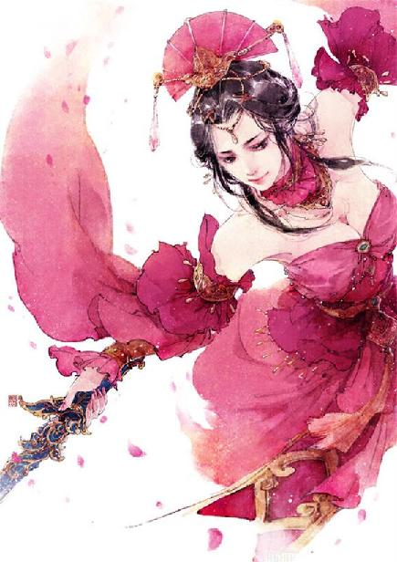

第83集·龙章凤仪
唐国篇（7）
出版日期：2020-02-09
【本集内容简介】
程宗扬代表宋国与申服君签下密约，对昭南的巨额赔偿却要程氏商会独自承担。这次的屠龙之术，究竟高明在何处？
杨玉环在紫云楼宴请诸王，盛唐乐舞让程宗扬大开眼界。杨玉环却怂恿他与诸王比试，一定要他写个服字！
赵飞燕的掌中舞力压群舞，身体却忽感不适，难道这位绝代佳人……有了不成？
※ ※ ※ ※ ※

封面人物：李十二娘
贾文和一个玩阴谋的，突然间客串了一把热血刺客，效果立竿见影。一万个道理都未必能说服的廖群玉，被一把错刀给说得心服口服，当即赶到宋国官邸，通过官方渠道传讯临安，以自己的身家性命作保，顺利说服贾师宪，由其举荐宝钞局主事、工部员外郎程宗扬为唐国正使，通问昭南事宜。
宋国行事向来拖沓，但贾太师亲自出面，自是不同。更何况昭南的战争威胁正打中宋国的软肋，在临安造成的震荡比外界想象得更加剧烈。有道是病急乱投医，宋国上下一片惶恐，正情急间，突然有人挺身而出，主动为国分忧，朝廷百官无不额首称庆，根本无人质疑程宗扬仅仅只是一个宝钞局主事，能不能担当起如此重任。
刚过午时，童贯便赶到程宅，口传圣谕：宝钞局主事、工部员外郎程宗扬忠敏勤敬，可当重任，特授礼部侍郎，差赴唐国，充任通问计议使，全权处置对唐国事务，及与昭南交涉各项事宜。
代宋主传完口谕，童贯立马趴下来，规规矩矩地叩首施礼，“恭喜程主事，升任礼部侍郎！”
程宗扬打趣道：“没跟你商量，就抢了你的正使职位，抱歉抱歉。”
“小的岂敢！”童贯爬起来道：“不瞒程侍郎，听闻昭南起兵，小的魂都快吓飞了，要不是程侍郎出面接下重担，小的早就六神无主，不知该如何是好。”
童贯一边奉承，一边取出早已准备好的正使符印、节杖等物，恭恭敬敬地双手奉上。
小贯子如此知情识趣，让程宗扬省了不少事。不过童贯也不是全无所得，在新的任命中，他被正式任命为副使。虽然由正转副，但他的正使原本只是应付唐国的权宜之计，这个副使却是实打实被朝廷认可的。这次与昭南的谈判如果顺利完成，更是一份天大的功劳。因此童贯不仅毫无怨言，反而愈发殷勤，只盼着能抱紧程侍郎的大腿，好分得一份功劳。
从工部转到礼部，品级由七品的员外郎直接升到从三品的侍郎，可谓一步登天。不过这玩意儿在宋国没个卵用，礼部侍郎只是官称，具体差事还要看差遣。自己的差遣就是个临时设置的通问计议使，差事办完也就没了。
不过升官总算好事，起码不再被人称为程员外了。程宗扬心怀大畅，当即由贾文和草书一封，致函昭南正使申服君，邀其在唐国的鸿胪寺举行正式会晤，对双方关心的一系列事务进行深入坦诚的探讨，在确保和平的前提下，尽双方一切努力解决目前存在的纠纷，达成共识。
廖群玉没有留下来等待谈判的结果，得知圣谕已至，他便与刘诏一道离开长安，以最快的速度返回临安。
高智商带着富安将廖群玉送到灞桥，郑重其事地把那份皇图天策府的录取通知书交给他。让他转告自家便宜老爹，往后这就是高家的传家宝，务必找最好的书画圣手，不惜钱铢，按最顶级的档次把它装裱好，挂在祠堂里，好让高家列祖列宗都高兴一下，看看自己这个便宜得来的子孙有多争气。
顺便让高俅寄一份家产的账目过来，高智商要检查一遍，看老爹有没有趁自己不在家，偷偷把自己要继承的家产给败光。
城外已经雪深尺许，廖群玉身披蓑衣，怀揣着那只关系到自家主公的生死荣辱，乃至大宋兴衰存亡的锦囊，丝毫不觉寒冷。
在灞桥的望天犼下，廖群玉向着长安城遥遥一拜，然后翻身上马，拱手对高智商道了一句：“衙内保重！”
然后冒雪冲风，打马而行，与刘诏一道，消失在漫天风雪中。
※ ※ ※ ※ ※
正月初七，辰时。
长安，皇城。鸿胪寺，礼宾堂。
大堂上设着茵席、漆几，东西各一，相距五步，形制、方位完全相同，以示双方地位对等。
鸿胪寺少卿段文楚居中而坐，作为双方的见证，他面前未设几案，只手持笏板，正襟危坐。
新授的宋国正使坐东朝西，背后是降为副使的童贯等一众宋国官员。宋人起居惯用高背胡床，但此时众人一律席地跪坐。毕竟今日会晤的昭南人惯于跪坐，他们若是还用座椅，双方会面时一高一下，一坐一跪，那场面……大伙儿就不必谈了，直接开打便是。
好在会晤地点是在唐国的鸿胪寺，席、椅兼有，双方共同采用唐国的坐具，倒是回避了座席制式可能引起的纷争。
“君上。”宋国正使、礼部侍郎程宗扬首先开口致意。
申服君头戴高冠，宽大的长袖羽翼般铺开，腰背挺得笔直，犹如一柄高古朴拙的长剑，寒气逼人。
见申服君冷着脸没有开口的意思，程宗扬笑容不变，继续说道：“昭南与宋国是山水相连的睦邻，双方多年来一直保持着友好而密切的交往，是彼此可以充分信任的好邻居、好伙伴。我方每年都要花费巨额资金，从昭南，尤其是君上的封地采购大量物品。”
程宗扬拿出一叠写满字迹的纸张，“我这里有一份数据，单是去年，仅筠州等地的粮行，就向贵方采购粮食超过三百万石，交易额达七十万金铢以上。可以说，我们双方的交往和友谊源远流长，根深蒂固，建立在平等互利基础上的贸易往来同样源远流长，彼此有着共同的利益和……”
申服君苍老而冰冷的声音响起：“交出张亢的人头。不然则战。”
“我想我们之间有一些误会。”程宗扬诚恳地说道：“听闻贵方境内出现的流寇伤人事件，我方表示极度震惊，对此高度重视，严重关切，同时向遇难者表示沉痛的哀悼和诚挚的慰问。为解决双方可能存在的误会和矛盾，维护来之不易的和平，朝廷特命我为通问计议使，全权负责与贵方的交涉事宜。第一步，我建议，双方立即成立联合工作组，对发生的一系列事件进行彻查。我方将秉着公平公正公开的原则，尽一切努力查明真相，决不放过一个坏人，也决不冤枉一个好人。”
申服君冷冷道：“汝等虚言堆砌，拖延时日，只是痴心妄想。我昭南六军齐发，不日便当挥师北上。”
说着申服君拂袖而起，谈判尚未开始，便宣告破裂。
“君上暂且留步！”程宗扬起身叫道：“我这里有个一揽子解决方案！无论事后证明事件是否与我方有关，都能最大程度保障贵方的利益……”
※ ※ ※ ※ ※
“身兼两国正使？”
李昂放下书卷，笑道：“这位程侯也是奇人。”
郑注道：“听闻他是宋国太皇太后的外甥，素有理财之能，宋国如今推行的纸钞，就是由他一手打理。”
李昂道：“他既然是宋国外戚，为何又成了汉国诸侯？”
宰相李训笑道：“外界有传闻说，这位舞阳侯实为汉国阳武侯之子，汉武皇帝嫡传血脉。洛都之乱，他以一己之力匡扶汉室，讨平刘建、吕冀诸逆，扶立定陶王为天子，有安邦定国之功。定陶王登基时，他被授为辅政，引来金龙降世，怒摧殿宇，为之不平。”
李昂皱眉道：“金龙降世朕倒是听说过，所谓不平，又是为何？”
郑注道：“汉国私下里有传言，说那位驾崩的天子血统不正。这位程侯身为武皇帝嫡脉，本该继位天子，却被百官所阻，最后只受封为侯爵，甚至不得改姓归宗，列位诸王。汉室护国真龙才因此在登基大典时现身，震慑百官。”
李昂恍然道：“汉室嫡脉，宋国贵戚，怪不得呢……”
郑注道：“那位程侯根基越深厚，对我大唐好处越大。此乃圣上之福，社稷之福。”
李昂笑道：“先别拍马屁了。他们与申服君谈得如何了？”
李训道：“开始刚说了两句，申服君就拂袖而起。后来被程侯开出的条件打动，一直谈到此时还未结束。”
“昭南人出兵之意甚决对，有何条件能打动他们？”
李训道：“段文楚段少卿原本在座，但双方开始商谈条款的细节，段少卿就被劝请回避了。”
郑注道：“以微臣想来，若要让昭南满意，无非割地赔款，或是兼而有之。就看昭南人胃口有多大，而宋国经历江州惨败、晴州反目之后，到底还剩下几分底气。”
“割地自是不可，无非是赔多赔少罢了。”李昂笑道：“当初那位程侯得理不让人，将段少卿逼得几欲白头，如今被昭南人抓到短处，倒要看他如何跟古板执拗的昭南人讲道理。”
“圣上。”一名穿着黄衫的内侍匆匆进来，低声说道：“宋国与昭南的谈判条款刚刚出来了。”
李训笑道：“弘志果然敏捷。他们这么快便谈妥了？”
“尚未谈妥。”李昂的心腹太监鱼弘志拿出一份抄录的文牍，“宋国坚持条款不能公开，所有内容均属于双方密约，若有泄漏，立即作废。”他笑着小声说道：“看来宋国这回吃了大亏呢。”
郑注不假辞色地呵斥道：“你一介阉人，岂得妄谈国是！”
鱼弘志连忙躬身俯首，双手奉上文牍，“小的不敢。”
郑注冷哼一声，拿过那份内侍省宦官私下抄录的文牍，随手拆开。
宋国与昭南的谈判再隐秘，终究是在大唐的地盘上，怎么可能瞒过那些宦官的耳目？
李昂道：“申服君只是昭南封君，又是出使大唐的使节，即使与宋使缔约，又有何用？昭南大军北上，哪里要听他的号令？”
李训道：“圣上说的极是。他们两边怎么谈，其实都于大局无补。多半是彼此试探……”
“不是试探！”郑注抬起头，带着一丝惊愕道：“宋国如此屈辞厚赂，难怪是密约！”
双方的条款说简单十分简单，宋国为了避免与昭南开战，不惜付出重金，提出与昭南签订一份每年赔偿十万到三十万金铢，一共五年，累计五十万到一百五十万金铢的巨额赔偿条约。
说复杂，宋国赔偿的方式又十分特殊。宋国采取的支付物不是金铢，而是纸钞，赔偿方式也不是直接付款，而是宋国的宝钞局每年保证授予昭南不低于一百万金铢，且不高于三百万金铢的兑换额度。
在此额度内，昭南人可用钱铢九折兑换宋国通行的纸钞，并且允许在宋国境内交易。也就是说，昭南人可以用九十万金铢兑换面值一百万金铢的纸钞，然后拿这一百万金铢的纸钞在宋国境内任意使用。
宋国允许以纸钞等值缴纳赋税，纸钞的价值与钱铢等同。为了打消昭南方面的疑虑，宋国正使在条款中向昭南方面保证，宋国将指定程氏商会对这批纸钞进行兜底。也就是说，昭南人拿着纸钞，不管怎么使用，最后都可以确保在程氏商会按照面值花出去，或者直接兑换成金铢，而不用担心手中的纸钞贬值或者变成废纸。
李昂和郑注都猜到宋国会采取赔偿的方式，却没想到宋国的让步会这么大。五年，累计一百五十万金铢，昭南人即使像他们宣称的那样打到临安城下，也不一定能抢到这么多钱。不！是一定抢不到！出动大军，需要给军队提供给养、物资，打完仗还要犒赏三军，抚恤死伤将士，算下来打赢都不一定挣钱。万一打输就更别提了。哪比得上安安稳稳坐在家中，让宋国拱手献上一百五十万金铢的巨款来得轻松？
五年一百五十万金铢，昭南六大封君，再算上昭南君长熊氏，平均下来，每位封君也能分到二十万多金铢，而且这笔钱不用分给部属族人，完全属于封君个人所有。李昂觉得，即使把自己换成申服君，肯定也要心动。说白了，几个流寇能杀几个人？能值一百五十金铢吗？
李训叹道：“打不起来了。”
李昂也是遗憾不已。他刚才还在质疑，申服君只是出使唐国的使节，即使与程侯谈妥，对昭南也没有什么约束力。但在这份密约中，宋国表示只提供不超过每年三百万金铢的兑换额度，具体分配由昭南自行决定。作为缔约方，申服君毫无疑问会拿到大头，熊氏作为君长，份额当然是最大的。如此一来，剩下的部分就需要其余五部彼此争夺，谁还有心思出兵？
鱼弘志道：“不然的话……把这份密约泄露出去？”
“荒唐！”郑注道：“损人不利己，反而得罪了宋国和昭南，何苦来哉？”
鱼弘志低下头，不敢再说话。
“一百五十万金铢……”李昂对这个数字仍纠结不已，摇头叹道：“宋国还真是舍得。”
“宋国也是无奈，剜肉补疮，饮鸩止渴罢了。”李训道：“拿出一百五十万金铢买个平安，总好过三面皆敌。”
“到底是一百五十万。”李昂道：“我倒想看看宋国能不能真拿出来。”
郑注看着抄录的文牍笑道：“宋国也是煞费苦心，明明花钱买平安，却不肯说赔偿，只说是优惠提款额度——掩耳盗铃，自欺欺人。”
李昂道：“朕现在反倒奇怪，昭南人为何还不答应？”
※ ※ ※ ※ ※
“如果这份协议没能签下来，就是我们程氏商会有史以来最大的失败！”
程宗扬挥舞着协议草案，对着下面的祁远、石超、贾文和、吴三桂、敖润、韩玉、高智商等人说道：“推行纸钞、金铢回流、货币变相贬值、垄断金融、指定出口商行、单一采购来源……每一项都是暴利！我们一次全做了！这份协议一旦签下来，将是我们程氏商会腾飞的起点！”
敖润道：“程头儿，他们拿九个铜铢换我们十个铜铢，我们不是亏了吗？”
祁远和石超行商多年，都是懂行的。祁远笑道：“这相当于九折卖货。数量这么大，肯定是不亏的。”
“何止啊。”袁天罡撇着嘴道：“一次性巨额充值，就给个九折优惠？连个充值大礼包都没有？策划也太黑了吧！没有当场返现，超值红包，我连眼皮都不夹。”
“你给我住嘴。”程宗扬警告道：“你当是垃圾网游充钱呢？这是真金白银的生意！”
“得。我住嘴。”袁天罡嘀咕道：“你当昭南人是傻子啊？长得不咋样吧，想得还挺美……”
自从抱上紫妈妈的大腿，袁天罡的气焰越来越嚣张了，程宗扬也不惯着他，吩咐道：“老敖，你看紧了，再啰嗦就给他塞马粪！”
把袁天罡这搅屎棍的嘴堵住，程宗扬继续道：“昭南人只要不傻，就能看出来这优惠是实实在在的！我们的诚意也是实实在在的！现在唯一的问题是，昭南人有没有达到额度上限的能力？或者退一步讲，假如他们连下限都满足不了，我们应该怎么帮助他们提升支付能力？”
石超道：“加快资金流转？他们用钱铢换成纸钞，再拿纸钞买东西。我们换来的钱铢也不能就放在库里，可以拿来买昭南的出产。他们手里有了钱铢，再来兑换。有来有去，这钱流起来，就成了活水。”
“说的好！扩大贸易范围，加快周转！干脆，我们在昭南设个结算中心，小额付现，大额的直接划账，免得把钱铢搬来搬去。”
贾文和道：“若是昭南不答应呢？”
“呃……”
吴三桂提醒道：“主公，我们能想到的，昭南人未必能想到，但晴州的商贾未必想不到。”
晴州商贾的经商理念不一定比自己更先进，但肯定更符合这个时代。尤其是他们无孔不入的关系网，远不是自己这个根基不深的穿越者所能比的。
“有晴州商贾插手也好！”程宗扬道：“我们正好能从昭南人的态度中，看出晴州对昭南的影响究竟有多大。至于昭南人答不答应，关键要看我们程氏商会拿出的诚意能不能打动昭南人。”
程宗扬并没有等太久，鸿胪寺的谈判结束后仅仅半个时辰，昭南人便作出回复：坚决反对宋国方面提出的一揽子解决方案！
代表申服君前来的卿士囊瓦严辞表明态度：昭南的尊严不可污辱！君上的尊严更不可污辱！张亢的作案范围主要是在申服君的封地内，给君上的子民带来无比沉重和惨痛的灾难。考虑到两国之间多年的友好来之不易，同时考虑到两国百姓的福祉，君上表示，宋国既然愿意和谈，如今悬崖勒马，时犹未晚，但必须将元凶张亢交给昭南处置！同时将兑付的折扣降为八折，每年优惠提款的额度提高到五百万金铢，期限延长为十年。
总而言之一句话：得加钱！
“狮子大开口啊！”祁远摸着下巴说道。
童贯作为副使，虽然没有参与程氏商会的内部会议，但与昭南人谈判时少不了他。看到昭南人开出的条件，童贯掰着指头一算，不由倒抽了一口凉气，“八折，五百万，十年，这就是一千万金铢！天爷啊……”
“怕什么？”程宗扬道：“昭南人既然肯来，就说明有的谈！至少申服君对条款是动心了。”
“程侍郎。”童贯小心提醒道：“这条款虽然是用宋国的名义，但说白了，都着落在宝钞局和程氏商会头上，里面的折扣可都要侍郎大人担着。”
“为国分忧还在乎这几个钱？”程宗扬慷慨说道：“我自己担着就是！”
“侍郎三思！”这会儿没有外人，童贯也是豁出去了，“侍郎的高义，小的看在眼里，记在心里，感佩得五体投地。可小的深受太后娘娘的恩典，总不能看着侍郎为国事背上这么大的亏空——朝中官员干出来的事，总不能让侍郎自己担着吧？”
真是个小机灵鬼啊，几句话表明了立场，表达了忠心，表示了关切，更刻意提醒自己，这是国事，私人分担一些，还能说忠义，自己全扛了，那可是要犯忌讳的！
“提醒得好！”程宗扬赞许地看了童贯一眼。
“这样，我们把预计会出现的损失统计一下，请朝廷承担大头。当然，朝廷财政一直吃紧，不可能拿现钱出来，我们可以准备几个替代性的方案：比如由朝廷支付盐引，给予商税减免，开放行业准入，或者提供经营场所等等。总之我吃点亏，朝廷面子上也过得去。”
童贯道：“程侍郎义薄云天，一心为国，小人佩服得五体投地……”
“行了，这会儿就别拍马屁了。”程宗扬笑道：“老四，你在筠州待过，商会的事也是你在负责，趁这会儿跟童副使商量一下，怎么向朝廷报备。记住，坚决不向朝廷要一文钱，宁愿我们自己吃亏，也不给朝廷添负担。”
祁远应了一声，与童贯一同退下，商量怎么向朝廷讨价还价。
贾文和道：“昭南人的开价如何应对？”
“昭南人要折扣，要额度，还要期限。其实要紧的只有折扣，额度和期限都是虚的，只要他们肯兑换纸钞，一百年我都敢签！”
贾文和思索片刻，然后叹道：“原来如此。”
程宗扬笑道：“以文和你的才智，都要寻思一下，昭南人肯定转不过这个弯儿来。”
“主公所列条款，看似曲意求全，令昭南大获其利，但仔细思量，字字都有深意。其中的道理精深幽微，玄奥非常，推衍下来，竟是一篇大学问。难怪主公称为屠龙之术。其微妙之处，属下亦是难解，真不知主公是如何想出来的。”
这话让秦桧来说，保证情真意切，言辞磊落，掷地作金石声，把马屁拍得光明伟岸。可贾文和是什么人？平常看自己的眼神都跟关爱智障一样，也就是奉自己为主公，才凑合着给点面子。能说出这种话来，程宗扬不禁老怀大慰。
“这就是代差了！”程宗扬笑道：“不过话说回来，若不是宋国生产力远在昭南之上，有能力进行倾销，我也不敢这么玩。”
程宗扬身为家主，但极少专断独行，行事通常集思广益，唯独这份密约完全是他自出机杼，即使在商会内部，都没人敢相信这份密约是对商会的巨大利好，一切都是他力排众议，以一意孤行的姿态把这份密约放到昭南人面前。对于目前的状况，程宗扬足以自傲。
贾文和道：“主公既然胸有成竹，想必已经考虑周详。”
“昭南人愿意谈，这事就成了一半。接下来我们咬定折扣不放，在额度和期限上给他们让步——不能让昭南人觉得这钱拿得太容易了！”
※ ※ ※ ※ ※
一只修饰整洁的手掌慢慢翻过纸页，中年男子专注地读着那份还未签署的密约，一字都不肯放过。他读得很慢，每读一段都要凝神思索片刻。
带着湿气的海风吹起窗后的白纱，几只海鸥正在波光粼粼的海面上飞翔。绚丽的晚霞下，一队归航的船只正满载着货物，扬帆驶入晴州内海。
一名文士恭敬地立在他身后，等他读完最后一个字，才开口道：“昭南人目光短浅，一听说能平白拿到上百万的金铢，立时就昏了头，怎么也听不进十九爷的劝说。”
“昭南人不通商业，不正是我们想要的吗？”中年男子道：“只能说，那位程少主抛出的诱饵足够诱人，我们棋差一着，怨不得别人。”
“眼下申服君已经动心，若不是十九爷竭力劝阻，只怕便与宋国签署这份密约，弭兵休战。”
“挡人财路，如杀人父母。”中年男子道：“既然无力回天，便让十九收手吧，免得被昭南人记恨。”
“可是一旦签署这份密约，整个昭南就被那位程少主一碗端走，一年数百万金铢的交易全落入程氏商会手中，行里怕是连口汤都喝不上。”
“那便让他们独占。”
“是。”文士应了下来，又道：“宋国有意向商会借款一百万金铢，以两年为期，年付息三成。”
“这也是那位程少主的主意？”中年男子道：“一手稳住宋国，一手拢络昭南，还不忘以重利向我晴州示好。年纪轻轻便能屈能伸，后生可畏啊。”
文士道：“宋军江州大败，朝廷亏空甚重，贾师宪强推方田均税法，更是雪上加霜。今年以来，宋国各地州府田地抛荒，收成大减，总商会内部评估，减产数量不下五千万石。如今宋国又在整顿禁军，财力早已捉襟见肘，若拿到百万金铢借款，恰是给他们雪中送炭，助其渡此难关。”
“商会是求利，宋国大乱，甚至分崩离析，绝非商会的目的。”中年男子说道：“若非贾师宪不守契约，执意对晴州征收重税，我们又何必与宋国交恶？这一点上，你要学学那位程少主。”
中年男子放下那份密约，站起身道：“生意就是生意，一枚金铢无论在杀父仇人手上，还是救命恩人手中，都是一枚金铢，不会因仇恨变轻，也不会因恩德而变重。因为生意之外的事误了生意，便是舍本逐末了。”
他负着手，边走边道：“十三在秦国做的事，我很不喜欢。做生意是为了求财，无论做什么，都是为了财利。十三上次说，他一句话就能调动成百上千官吏为其所用，因此自鸣得意。却不知人情如网，他能指使别人，反过来别人又何尝不是以他为用？热衷操弄权势并不为过，但被权力迷花了眼，就是愚蠢了。将来愈陷愈深，被这张网束住手脚，作茧自缚，便悔之晚矣。”
文士道：“属下这便传讯咸阳，让十三爷回来住些日子。那边的事……”
“交给十六吧。他在洛都做得不错。先设计掏空吕氏的家底，又趁着吕氏倒台，一举抹平账目，从容脱身。明轻重，知进退，不恋权势，不贪小利。让他去安抚一下秦人也好。”
“是。”
中年男子赤足踏过光可鉴人的柚木地板，“回到宋国这笔借贷，我们需要考虑是不是有利可图？宋国是否有足够的还款能力？是以信誉还是实物抵押？存在的风险有多大？如果有利可图，助宋国渡过难关有何不可？若是注定蚀本，即便以宋主为质，也不必理会。”
文士道：“三成利息已经是稳赚不赔，不过以属下之见，那位程少主多半会故技重使，设法用他的纸钞来偿还利息。”
中年男子立在窗前，望着海面的景色，良久才喟然叹道：“程氏这只老虎，已经长大了啊。”
一阵寒风卷起白纱，远处的舰队船帆鼓满，船身被吹得倾斜，水手们匆忙奔上甲板，降下硬篷船帆。
中年男子伸出手，一片晶莹的雪花落在指尖，精致的六边形犹如钻石般闪闪发光。
中年男子久久凝视着那片雪花，不由皱起眉头。
※ ※ ※ ※ ※
昭南人急于谈判，离开鸿胪寺后又赶到程宅。本来将谈判地点放在程宅也省事，但昭南人认为上门谈判不够体面，坚持放在升平客栈。
申服君自矜身份，没有出席。按照对等原则，程宗扬也不好亲自上阵，因此昭南方面派出的谈判代表是卿士囊瓦，宋国方面则以祁远为主，贾文和为辅。中行说虽然嘴炮无敌，但这货的属性全点在攻击力上了，让他参与谈判，说不定两句话就将性格激烈的昭南人杠得当场暴走，双方大打出手。所以程宗扬早早就把他关在内宅里头，压根儿没敢让他知道。
虽然没有亲自出席，但整场谈判始终按照程宗扬预设的框架，在他的控制之下，艰难而又快速地向前推进。
这场马拉松式的谈判，让程宗扬充分见识了昭南人的古板、顽固、执拗，还有奔放而热烈的激情。从双方正式接触开始，就始终保持着快节奏高频率的密集沟通和交流。
谈判的地点从鸿胪寺改到程宅，又从程宅改到升平客栈，谈判的时间从上午延长到下午，又延长到夜间。昭南人对密约的内容锱铢必较，又不断提出新的要求。但在程宗扬看来，他们所关注的尽是些细枝末节，对于真正的利益核心：程氏商会发行的纸钞，没有任何警惕和防范。
在昭南人眼中，所谓的纸钞，其实是昭南用九十万金铢换取宋国价值一百万金铢，且必须按期偿还的欠条。这不能怪昭南人无知，昭南的商业在六朝中都是垫底的存在，要让他们迈过商品和商业的知识鸿沟，理解并认识到货币的威力，实在太过强人所难了。
谈判进行到夜间，程宗扬试图让祁远劝说昭南人休息一晚，养足明天精神再谈。结果刚一提出，就被昭南人毫不犹豫地拒绝了，昭南的卿士囊瓦甚至态度激烈地声称：假若宋使再故意拖延时间，便让昭南六军来谈！
昭南人的态度让程宗扬禁不住怀疑，他们是不是已经出兵了？申服君这么着急，会不会是怕来不及阻止昭南的军事行动，导致签署的密约无法履行？
昭南人如此执着，程宗扬只好陪他们熬着。祁远等人在前方唇枪舌剑，每次昭南人又提出新的要求，双方僵持不下，都不得不传回内宅，由主公定夺。
直到天色将亮，谈判才勉强告一段落。祁远也是个嘴皮子利索的，但跟昭南人打了一整天的嘴炮，已经累得连说话的力气都没有，这会儿一个接一个地打着呵欠，脸色熬得又青又黄，让程宗扬看着都心疼。
贾文和精神略好一些，但也好得有限。比较而言，他是对主公真实主旨了解最深的一个，也是花心思最多的一个。毕竟是在几乎零基础的情况下，陡然接触到现代金融经济的各种概念，贾文和能在短时间内理出脉络，已经是殚精竭虑，才智惊人了。
相比之下，精神最好的却是童贯。这小子熬足一整晚，非但不见半点困意，反而整个人神采奕奕，容光焕发。他一个名不见经传的小太监，机缘巧合之下，一跃成为官方任命的副使，亲身参与到事关两国国运的机密谈判中，这资历可是独一份。份量之重，比起秦翰秦大貂珰临阵破敌的赫赫战功也不遑多让。
另外一个有份参与的是高智商，程宗扬给他挂了个会议秘书的名头，也塞到了谈判阵容里面，算是给这小兔崽子一个刷功劳的机会。高智商也不负众望，前半夜差不多都是在谈判桌上睡过去的，后半夜被尿憋醒，又被富安捏着鼻子灌了一壶浓茶，才打起精神，将商定的条款抄录了两份，供双方参考。
“密约的条款大致已经谈妥，唯独卡在一件事上。”祁远道：“昭南咬定了要张亢的人头，丝毫不让。”
“这个不行！”程宗扬一口否决，“张亢再怎么说也是宋国官员，要是为了求和把他丢给昭南人，还不如明刀明枪地打一场。”
童贯道：“小的在旁听着，这里头呢，也不是没有商量的余地。昭南人要的是面子，只要求把张亢那厮交给他们处置，不一定真要他的性命。到时候坐几年牢，再悄悄把他接回来，昭南得面子，咱们得里子，张亢也保住脑袋，岂不是三全其美？”
童贯急于建功，可这么要紧的密约偏偏卡在张亢一人身上，心头急切，便显得沉不住气来，话里话外都主张把那个该死的杀人犯丢出去。只用牺牲他一个，不知能成全多少人的功劳，这笔账实在太划算了。
“昭南的面子有了，宋国的面子就丢了。”程宗扬道：“这是原则问题，不容商量。”
祁远道：“真不行的话，条款上再让一步？”
“不可。”贾文和道：“昭南人惯用蛮力，以势逼人，一旦退让，必定得寸进尺。”
“文和说的对，不能再让。”程宗扬道：“还有，无论如何，张亢都不能交给他们。这两条是底线！”
童贯道：“万一谈崩了怎么办？好不容易谈到这地步……”
高智商插口道：“密约的条款咱们不让，可以私下给申服君一些好处啊。”
祁远精神一振，“贿赂？”
程宗扬眼睛也亮了起来，“这思路不错啊！大伙儿都想想，怎么给申服君点好处，堵住他的嘴？”
商议好应对之策，天色已然微亮。祁远等人不待休息，便赶回升平客栈，与已经等得不耐烦的昭南人继续谈判。
程宗扬则叫住童贯，将一盏点心递给他，“一晚上都没吃东西吧？先吃点儿垫垫。”
童贯眼圈都红了，捧着碟子哽咽道：“侍郎如此体贴小的，小的……五内俱沸……呜呜……”
“好了好了，男儿有泪不轻弹。”
童贯缩了缩身子，“……小的只是个阉奴。”
“这有什么？秦翰秦大貂珰，陷锋破阵，战功赫赫，谁不说一声英雄？”程宗扬拍了拍他的肩膀，“我是很看好你的。”
童贯眼泪汪汪地抬起脸，眼中露出一丝错愕。
“先吃，吃完再说。”
“哎。”童贯三口两口吞下点心，吃得太急，不小心噎了一口。
程宗扬递了杯水给他，一边道：“你们连夜辛苦，这次谈判的功劳，总少不了你的一份。至于那个张亢，我跟他并没有什么交情，不瞒你说，如果有人要杀他，我绝对乐见其成。不过他即便该死，也不应该当作谈判的筹码去死，你明白吗？”
童贯听懂了，程侍郎是怕自己生出心结，才特意把自己留下来，专门解释一番。可自己不过一个草芥般的小人物，哪儿敢有什么心结？他如此降贵纡尊，连自己这么个小蚂蚁的心情都刻意照顾到。还有在临安时，自己要使钱，商会账上的钱款随用随支——程侍郎方才那句看好不是随便说说，而是真的看重自己。
童贯眼圈这会儿是真红了，他捧着茶盏，刚要开口，泪水却猛地涌了出来，连忙拿袖子去擦，又险些打翻茶盏。
忙乱间，程宗扬抽出一条丝帕，塞到他手里。
童贯泪水愈发汹涌，拿丝帕捂住眼睛，呜咽道：“侍郎这么看得起小的，小的……小的……呜呜……媛公主向侍郎问好。”
程宗扬怔了一下，“怎么突然提这个？”
童贯抹着眼泪道：“小的不是有意偷听，就是不小心听见一耳朵。太后娘娘有回跟媛公主说话，我听见娘娘说，有意让侍郎尚公主……”
娶赵媛？程宗扬忽然有种“村村都有丈母娘”的感觉。说实话，跟申服君当面谈判时，这种感觉就很强烈，也就是怕被申服君打死，才没敢表露出来。
童贯吸了吸鼻子，“太后娘娘把侍郎看得……比自家子侄都亲。”
程宗扬眉梢微微挑起，“哦？”
这小子话里有话啊，难道是看出什么了？蛇奴不是说她们平常都背着人，闭了宫门才胡搞的吗？何况童贯这厮也不是傻子，即便真看出来什么，他哪儿来的胆子当着自己的面说出来？虽然这小子也算自己的人，但宫闱之事都敢乱说，就不怕自己杀人灭口？
屋内的温度仿佛突然降了下来，变得寒意刺骨。
童贯扑通跪下，“呯呯”磕了几个响头，尖着嗓子道：“在奴才眼里，少主其实就跟主子一样！”
室内一片寂静，童贯不敢抬头，脑门紧紧贴着地面，冷汗一滴一滴溅落。
忽然脑袋一沉，一只脚踏在他脑后，虽然没有用力，却重如泰山，仿佛轻轻一踩，就能将他的头颅踏得粉碎。
童贯心头怦怦直跳，冷汗顺着脖子流到下巴上。
程宗扬不禁生出一丝佩服。这小子真敢赌啊，自己略示好意，他便抓住这一线机会，不惜把自家性命当成筹码押上赌桌。一铺押错，就是尸骨无存的下场，居然只流了点儿冷汗？
程宗扬没有开口，反而拿起茶盏，慢悠悠饮着。
童贯伏在地上，冷汗已经湿透了内衣。
良久，程宗扬开口道：“我掏钱你办事，这交情本来不是挺好吗？不过是尚公主，一个驸马爷而已，也值得你舍命投效？”
“奴才不敢欺瞒主子，”童贯道：“当日传来主子大婚的消息，太后娘娘才说的这番话。说是尚公主，其实是让媛公主委身主子，讨主子的欢心。奴才听在耳中，这才知道主子在太后娘娘心里的份量格外不同，起了投效的心思。”
果然是个机灵鬼，娥奴口风稍有不谨，就被他揣摩出内里的隐秘。还有胆子把宝押在自己这一注上。
“谁告诉的她们，我要大婚？”
“那位琳夫人入宫面见太后娘娘，说主子要什么信物。她走之后，太后娘娘就叫来媛公主，私底下商议怎么讨好主子。”
“你在宫里混得挺好啊，都在太后娘娘身边伺候了？”
“都是托主子的福。一来奴才照主子的吩咐，从商会拿了钱铢，用来上下打点；二来太后娘娘因为主子提过奴才，对奴才高看了一眼；再则奴才年纪小，平常出入宫禁，宫里的贵人也不大在意。”
“你还知道什么？都说来听听。”
童贯咬了咬牙，“主子可知道韦太后？”
韦太后是宋主的生母，地位尊崇，但她不是个揽权的性子，宋主幼龄登基，是由刘娥这位太皇太后垂帘听政。尤其是小公主失踪后，她便深居宫中，杜门不出。自己在临安时，也只跟刘娥厮混过，还没有跟她打过照面。
“听说了。好端端的，怎么突然就一病不起了？”
这么大的事，林清浦传讯时自然会提及。自己当时只觉得挺突然，但并没有多想。
“禀主子，”童贯压低声音道：“韦太后其实没死。”
程宗扬眼睛微微眯起，“仔细说！”
“太后娘娘跟媛公主说完话不久，大概九月底的时候，小的正在韦太后宫里当值，有人递了只匣子进来。主子也知道，韦太后平常不喜多事，连官家每日问安也多半免了，但接到匣子，韦太后立刻召见了那人。”
“什么人？”
“是个女的，戴着面纱兜帽，奴才没看清长相，就瞧见她头发是白的。不过白得发亮，看着不显老，倒是别致得紧。”
程宗扬坐直身体，“姐妹俩？”
“只有一个。”
银白长发，除了虞白樱、虞紫薇姐妹，还能是谁？九月底，当时自己正在洛都为岳鸟人的遗物奔忙。会不会是她们找到临安，发现自己不在，才转头去了咸阳，还拐走了徐大忽悠？
“然后呢？”
“她们说了些什么，奴才没听清，但刚说了几句，韦太后就哭了起来。后来惊动了太后娘娘，两边吵了几句，最后不欢而散。”
程宗扬眉头紧皱，来的这个也不知道是姐姐还是妹妹，行事怎么看都够莽撞的，居然进宫跟太后和太皇太后吵架。虞氏姐妹造谣说自己专门搞太后，不会就是因为这个吧？
“那女子走后，韦太后就不进茶饭。太后娘娘和官家来劝过，韦太后都不言语。过了三四天，有天半夜，韦太后突然叫来贴身的宫女，说要沐浴更衣。刚梳洗完，人突然就不行了。太后娘娘和官家都来哭了一场，官家辍朝服孝，下诏大赦天下。”
不知何时，程宗扬已经松开脚，童贯小心翼翼地抬起头，偷偷看了程宗扬一眼。
程宗扬拧眉出神，半晌才道：“你怎么知道她没死？”
“回主子，韦太后入殓时，脸上覆着锦帕，但奴才瞥见她的耳垂。奴才记得清楚，韦太后戴坠子的耳孔是一对，但上面只有一个，看位置，倒像是……像是韦太后那个贴身宫女。”
程宗扬沉默移时，冷冷道：“你看错了。”
童贯抬手给了自己一个耳光，“是！奴才看错了，下葬的就是韦太后！”
“还有没有谁看错的？”
“给韦太后入殓的是太后娘娘的贴身太监，陈琳陈大貂珰。除了奴才眼花，不小心看错，旁人多半都没留意。”
程宗扬轻轻叩着扶手，良久道：“还有吗？”
“还有……高太尉整顿禁军，裁撤了一批武官的世职，惹来不少攻讦。”
宋国禁军看起来高大威猛，可一大半都是样子货，全靠着世袭的武职充数，临阵杀敌，还不如秦翰那支出身草根的选锋营。但既然是世袭，那些军官职位不高，关系却是盘根错节，保不准走了谁的门路，就能上达天听。即便以高俅的手段，想摆平这些关系也非易事。
“王禹玉不是被贬岭南了吗？什么时候又复位了？”
“他倒是想走，可没走成。”童贯道：“贬职的诏书刚下，贾太师和高太尉就先后上了札子，一个让王相爷主持方田均税法，一个让王相爷兼管枢密院，主理军备，好戴罪立功……”
程宗扬听得直发愣，脑中闪过的第一个念头：这是两个政治流氓啊。当初奸臣兄跟王蕙里应外合，把自家岳丈贬官岭南，主要是为了两人成亲，其中也未尝没有保全他的心思。结果贾师宪和高俅一人拽住王禹玉一只手，非要把他留在临安，还往他怀里塞了两颗炸弹。
方田均税法和整理禁军，一军一政，都是要命的差事，两人齐心合力把王禹玉顶到前头，让他扛雷……程宗扬忽然觉得，外面正在喝西北风的孤独郎还不算最惨的，顶雷界的扛把子在临安呢。
程宗扬转念一想，莫非王禹玉是私下出钱，买通东方曼倩当众痛骂他一番，好借机滚蛋？这不是没可能啊！若论治国的本事，宋国比汉唐差出去一条街，起码汉唐不会混到连仗都打不起。但论起花花肠子，宋国在六朝可是当仁不让的第一。汉国质朴，唐国气量宏大，晋国风流，秦国刚劲，昭南浪漫执拗，轮到宋国就剩勾心斗角了。治国水平一般吧，玩起心眼儿来，一个赛一个的精明。
程宗扬站起身，“此间事了，你就别回去，就留在长安吧。”
童贯脸当时就白了。难道这会儿才揭开骰盏，自己这一铺押错了？
“我本来想让你立一番功劳，回去好升迁。但你年纪小小的，回去恐怕跟他们学坏了。”程宗扬道：“这样，你还是去皇图天策府，我去求见卫公，教官、科目随你挑。过完年你跟高衙内一道入府就学。”
程宗扬道：“宋国内臣有习兵的传统。秦翰、李宪都是以军功立身。如今再加你一个童贯，将来可不要给他们丢脸。”
童贯脸色缓了过来，听到后面的期许，更是感激涕零，当即叩首道：“主子的恩典，奴才没齿难忘！”
“好了，在外边可别这么称呼。”
这话说出来，童贯终于吃了定心丸，知道这一铺自己终究是押对了。这一刻起，他从拿钱办事的自己人，真正升格为主子的心腹。
“是。小的知道。”
程宗扬忽然道：“你是不是知道我心软，才有胆子赌这一把？”
童贯连连叩首，“小的再也不敢了！”
还真是……程宗扬在肚子里翻了个白眼。也不知道是这小子够机灵，还是自己的破绽太明显，竟然被一个小太监给利用了。
“琳儿，送他出去。”
阮香琳进来道：“童副使，这边请。”
童贯身体当时就矮了半截，“小的不敢，姨娘先请。”
阮香琳领着他出门，一边笑道：“那天我跟娘娘戏耍，是你在外边吧？”
“回姨娘，小的什么都没看见。”
“怪不得相公说你机灵呢。”阮香琳一笑而罢，“我几个月没回临安，那边可好？”
“都好。贵镖局搭上云氏和程氏商会的线，生意愈发兴旺……”
交谈声渐渐远去，程宗扬靠在椅中，不由闭上眼睛，打了个呵欠。熬了一整晚，又得知临安大内那些不为人知的秘辛，但他这会儿也顾不过来，只想倒头睡上一觉，把这些烦心事都抛到脑后。
一条热腾腾的巾帕覆在脸上，接着环佩声响，阵阵香风袭来，内宅的姬妾们娉婷而至。
“大笨瓜，眼睛都熬红了。”小紫把热水绞过的巾帕敷在他脸上，手指轻轻揉着。
“不拼命能行吗？”程宗扬长叹一声，口气无比沉重地说道：“还得养活你们呢。”
“我可以少吃一点哦。”
“别！你给我使劲吃。瞧瞧人家杨妞儿，发育得多好？那胸怀！啧啧……伟大啊。”
“程头儿，你嫌我胸小哦。”
“乱说！你的叫完美，杨妞儿那叫夸张。她那对胸器……这么说吧，将来她要是生娃，自己喂一窝都有富裕。”
“蛇奴，程头儿说的都录下来了吧？”小紫笑道：“一会儿给杨姐姐看。”
“随便。”程宗扬一脸不在乎地说道：“你家杨姐姐是个深度抖Ｍ，听到我羞辱她，她指不定多兴奋呢。”
“真的吗？”
“假的！赶紧给我掐了！让她看见我们就死定了！”
正在给他梳头的赵飞燕禁不住笑了一声。
“你别笑，一会儿到车上先干你！”程宗扬道：“别以为我这边忙，你们就能偷懒了。”
赵飞燕笑道：“回夫君大人，昨晚掷骰子，却是妾身赢了，今日能躲一日的懒呢。”
“又拿我当赌注？不应该谁赢谁来伺候老爷我吗？整天乱换规矩。”
赵合德道：“还要赴宴啊？你一晚上都没睡呢。”
“少睡一觉又不会死。”程宗扬伸了个懒腰，挣扎着坐起身，“这次的宴会比睡觉可要紧多了。”
惊理掀帘进来，一边拂着头上的雪花，一边道：“车马都已经安排好了。泉奴方才传讯，外面这会儿有两伙人盯着，一伙是内侍省的人，另一伙身份不详，猜测是藩镇的爪牙。”
程宗扬讶道：“居然不是龙宸？”
若论对自己的敌意，龙宸绝对在藩镇之上，没道理藩镇的人都来了，龙宸的人反而没有露头。
“龙宸惯于隐匿踪迹，也许此时就藏在暗处。”
“那位独孤郎呢？”
惊理笑道：“一早就在外面等着了。只这会儿工夫，对面的教坊就来了三拨姑娘，邀独孤郎一同用餐。主子再不出门，她们就该打起来了呢。”
程宗扬感叹道：“长得帅果然能当饭吃啊。”
赵飞燕将他的头发挽好，然后用丝带扎了个圆髻，左右端详了一下，问道：“戴冠，还是幞头？”
汉国用冠，唐国惯于用乌纱帽，帽后垂着两只软翅，称为软脚幞头。宋国官方将软脚改为硬翅，官位越高，帽翅越长。程宗扬身兼两国使节，这次赴宴又是客人的身份，戴冠亦可，入乡随俗亦无不可。
程宗扬想了想，“用金冠吧。”
无论汉国的高冠，还是唐宋的乌纱帽，都显得太正式了。束发金冠是贵公子们常用之物，除了豪奢了些，并没有多少官方意味。
赵飞燕取来金冠给他戴上，用一根玉簪挽紧。
成光拿来铜镜，程宗扬一边照了照，一边道：“你们都要去吗？”
小紫笑道：“杨姐姐说了，你们男人在外面花天酒地，凭什么把我们关在家里不许出门？”
“她什么意思？都挑拨到我家里来了？我什么时候不许你们出门了？”
“总之杨姐姐专门下了帖子，邀我们到曲江玩——是全部哦。”小紫笑道：“程头儿，你一个人可要乖乖的，不要被妖精吃掉了。”
“好歹给我留一个啊，真是的。”
“让飞燕姐姐在车上陪你好了。”
赵飞燕笑道：“输的可不是我。”
“那就合德妹妹好了。”
“不要。”赵合德连忙道：“在车上会被人听到，太羞人了。”
蛇夫人笑道：“咬着帕子好了。”
“不行。被人看到我跟他坐一辆车，就知道我们在做那个……”
“那就琳儿吧。”看到阮香琳进来，小紫笑道：“我们程老爷刚升了官，琳儿去车上陪侍，好给老爷贺喜。”
阮香琳乖乖应下，“是。”
“雉奴呢？让她也来。”程宗扬道：“趁老爷我高兴，在车上挨个给你们点卯！”
※ ※ ※ ※ ※
巳时刚过，十余名护卫簇拥着五辆大车浩浩荡荡往曲江方向驶去。南霁云一马当先，在前开路，吴三桂断后，独孤谓随行，敖润和韩玉则留在宅中，负责贾文和、祁远、袁天罡等人的安全。
任宏戴了一副须髯，臂上架着一只苍青色的鹘鹰，打扮成随从的模样，乘马跟在车旁。旁边的青面兽只穿了件熊皮坎肩，露出两条满是黑鬃的手臂，迈开大步踏过冰雪。
程宗扬只是嘴上说说，不至于急色到这点时间都不放过，当真在车上白昼宣淫。他搂着阮香琳坐在自己膝上，一边耳鬓厮磨，把玩着自家小妾香软的身子，一边望着车外的雪景。
一夜大雪，长安城仿佛换了模样，大街上雪深逾尺，道路两旁的苍松古柏都被大雪覆盖，往日的朱楼雕阁卸去铅华，一片银装素裹，宛若天上白玉京，红尘尽洗，车行其中，如入仙境。
各坊的卒徒在里正带领下，铲除积雪，扫净道路。路上的行人虽然依旧步履匆忙，但比平常少了几分急切，多了几分小心。不时有儿童从坊中奔跑出来，在雪地中追逐嬉闹，兴高采烈地打起了雪仗。
马车穿坊而过，十字街边的水井旁围满了打水的居民，他们扛着扁担，挑着木桶，彼此谈笑问好。人群中夹杂着几名头上顶着陶瓮的新罗婢，戴着面纱的波斯胡姬，还有些将铜壶扛在肩上的兽蛮仆和昆仑奴。
一名牛车碾着冰雪慢吞吞驶来，车前的老人头发花白，满面烟尘，单薄的衣袖下露出乌黑的手指。两名内侍纵马驶过，看到车上载的木炭，穿着白衣的宦官勒住坐骑，朝老人呼喝几句，旁边身着白衫的小太监掏出一串钱铢挂在牛角上，然后叫来卒徒，将大车推走。
老人拽着内侍的衣角苦苦哀求，却被一脚踢倒，伏在雪泥中大放悲声。
阮香琳媚眼半闭，偎依在相公怀中，身子软得仿佛没有骨头一样。吕雉红唇微微抿紧，一手按住腕中的金镯。
程宗扬有些恍惚地看着这一幕，等马车驶过才回过神来。他随手拽出一只钱袋，推开车窗丢给任宏，朝那卖炭老翁指了指。
任宏心下会意，双腿一夹，策马离开队伍，然后跃下马，扶起那名老人，拍了拍他身上的雪，一边低声安抚，一边将钱袋塞到他手里。
吕雉举起手腕，抿了抿鬓角，忽然道：“先父过世那年，洛都雪深尺许，家中木炭用尽，瓮中只剩下最后一把豆子。我不得不劈碎家传的紫檀木几，与两个年幼的弟弟挤在厨下，一边生火取暖，一边等着豆羹煮熟……”
程宗扬懒洋洋道：“你那时候要是认识我就好了，嫖你一次，起码给你几个钱用用。”
吕雉脸一红，扭过头去。
“过来，给老爷暖暖手。”
吕雉咬了咬唇瓣，然后解开衣襟，将主人的手掌放到自己胸口，任由他握住自己胸前那对丰满和高耸。
程宗扬吹了声口哨，“居然是粉红的？真看不出来啊，娘娘年纪一大把了，还有颗少女心呢。”
说着将那条霓龙细丝织成的乳罩扒到乳下，握住一只乳球。
吕雉低头道：“是别人挑了给我的。”
程宗扬捻住她的乳头，揉捏着说道：“难怪小了一号，都勒出印子了。自己脱下来！还让老爷帮你啊？过来，用你奶子让老爷爽一下！”
阮香琳酸溜溜道：“太后娘娘的奶头这么嫩，怪不得还是处子呢。”
“瞎说！”程宗扬道：“这贱婢早就被我开苞了。不信你问她。”
“太后娘娘，是不是啊？”
吕雉一边用双乳夹住主人的肉棒，一边低声道：“是。”
阮香琳笑道：“老爷是怎么给你开的苞？”
吕雉道：“……那天奴婢给老爷侍浴，老爷让奴婢趴在凳子上，从后面给奴婢开了苞。”
“痛不痛？”
“痛……”
“第一次服侍老爷，娘娘什么感觉啊？是羞耻，还是开心？”
吕雉抬起眼睛，镇静地看着她，“想来与姐姐当初一样。姐姐害羞，奴婢便也害羞，姐姐开心，奴婢便也开心。”
阮香琳噎了一口，过了会儿才气恼道：“你一个不入等的贱婢，也配跟我姐妹相称！”
吕雉淡淡道：“我倒是想叫你夫人，你当得起吗？”
阮香琳几乎气炸，“你——”
“揍她！”程宗扬道：“敢这么说话，就是欠打！别打脸啊。”
阮香琳朝吕雉啐道：“别以为你是处子就有什么了不起的，还不是被人当成傻子戏耍？”
吕雉道：“李夫人说的是。”
阮香琳张大嘴巴，想说什么却没说出来，随即恼羞成怒地扬起手掌。
程宗扬叫道：“打她屁股！把她内裤扒了！光着屁股打！”
吵闹间，车门忽然打开，一个人影钻进车内，毫不客气地往对面一坐，顺势翘起脚，拍了拍靴子上的雪。
阮香琳赶紧拉下半解的罗裙，吕雉一手捏住襟口，一边举手拂了拂发丝，侧身半掩住面孔。
程宗扬呆了半晌，望着对面的中行说道：“你不是在后面车上吗？”
“跟人拌嘴了。”中行说淡定地说道：“你们继续，不用照顾我的情绪。”
照顾你的情绪？老爷我正跟姬妾亲热呢，你一个大活人钻进来，跟无常鬼似的往那儿一戳，俩眼直勾勾盯着，一点儿都不带见外的——你怎么就没想过照顾我们的情绪呢？
“你这样不行啊。”中行说放下脚，语重心长地说道：“年轻力壮的，满屋子的姬妾，连一个怀上的都没有，传出去岂不成了笑话？要不我给你开个方子补补？真不行我给你看看，是不是你姿势不对。”
程宗扬都听傻了，你一个太监是打算指点我行房还是怎么着？这去哪儿说理呢？
“你以为我不懂？”中行说从鼻孔里嗤笑一声，“这事儿我见得多了！里头那点儿路数，我门儿清！”
中行说丝毫没有身为太监的自觉，一脸内行地指点道：“这俩不行啊。年纪大了，不好生养。你得有点儿责任感，不能光图自己快活，想日谁就日谁。有道是寡欲多子，那点儿钢你赚得容易吗？你得用到刀刃上。上好的肥田你不勤着伺弄，整天日弄这些盐碱地，那能打粮食吗？”
程宗扬越发觉得刘骜这人真的很大度，一点都不小心眼儿。换成自己，早就弄死他了。
“这话我可憋了有日子了，也就是今天没人才跟你说说。忠言逆耳利于行，我这都是金玉良言，你可别不当回事……”
“我谢谢你啊！”
程宗扬觉得这会儿车里想弄死丫的，绝不止自己一个。没人？你当她们两个是什么？夜壶还是肉便器？
“不用谢。我刚说的你都记住了？你们俩出去吧，别有事没事总往主子身边凑。尤其是你，姓吕的。”
中行说指着吕雉说道：“姓阮的身份低下也就算了，你好歹也是当过太后的人，矜持点啊。我一上来就看见你挺着奶子接……”
话没说完，程宗扬就扑过去捂住他的嘴，“哥！闭嘴吧！”
“唔唔……喔……哦……呜……”中行说奋力挣扎。
吕雉掩袖遮面，连耳根都红透了，接着她猛地一把拉开车门，跳下车，厉声道：“有刺客！”
车队一阵骚动。片刻后，中行说被人塞住嘴巴，七手八脚地抬走。车内终于安静下来，只剩下程宗扬与雪雪面对面坐着，大眼瞪小眼。
鬼知道刚才一阵混乱，怎么把这小贱狗给剩下了。程宗扬心潮澎湃，波涛般此起彼伏，久久不能平息，最后千言万语汇成一个字——
“干！”
※ ※ ※ ※ ※
曲江苑，紫云楼。
打着程氏旗号的车队赶到时，楼前已经车水马龙。
唐国滥封名爵的情形与宋国不相上下，李辅国、童贯这两位封王的太监就很能说明问题。连高霞寓这样抱上宦官大腿的庸人都能获封郡王，皇室宗亲更不用提了。何况老李家又特能生，一众龙子凤孙挨个封王，什么抚王、光王、绛王、江王、安王、陈王……数都数不过来。
程宗扬也算见识了杨玉环的面子，她一句话，长安的宗室诸王，只要是能动的，全都来了，场面比王显召集的豪门盛宴更宏大十倍——单是内侍们架的鹰就有上百只，随行的猎犬、骏马不计其数，紫云楼前冠盖云集，贵气逼人。
抚王李纮伤势未愈，这回也“挣扎”着前来赴宴。上回见过的光王李怡混在人群里，毫不起眼，远不如他的侄儿江王李炎更受人瞩目。绛王李悟与光王李怡同为兄弟，也是李炎等人的叔父，但比笨手笨脚的李怡利落得多，这会儿正和几位宗王在雪地上纵马击球，随行的内侍欢声四起。其中一位少年金冠玉带，挥舞着球杆纵马奔驰，身手矫健，引来阵阵喝彩。
“这位就是陈王李成美。”任宏道：“先皇敬宗幼子，今上的侄儿。唐皇膝下无子，有意立其为皇太子。”
程宗扬想起当初在街头目睹杨玉环揍人，其中一个挨打的倒霉鬼就自称是陈王门下，结果被杨玉环一通暴揍，一点儿面子都没给。
不过程宗扬印象最深的还是这位皇太子够种马，才十五岁就足足生了十九个儿子，简直是播种机转世……
这事不能多想，一想就想起中行说那厮的嘴脸。程宗扬赶紧把这念头丢到一旁，问道：“哪个是安王？”
任宏看了一圈，指着楼上道：“那个胖子就是。”
安王李溶身材肥壮，年纪却不比陈王大多少。他是李昂、李炎等人的幼弟，李炎才二十出头，他也大不到哪儿去，刚刚及冠而已，这会儿正在栏杆边跟人说话。
任宏道：“唐皇甚重手足之情，对江王、安王这两位兄弟极为照顾。甚至有传言称，今上原本有意立安王为皇太弟。”
程宗扬手下都是外来人，对长安风土人物所知不多，特意找来任宏随行。任宏在长安经营多年，属于本地的地头蛇，有他在旁提点，总算不是两眼一摸黑，指着冯京当马凉。
这次赴会，程宗扬并不想引得路人尽知。他让杨玉环出面宴请诸王，自己作为宾客，适逢其会，找个机会与安王和陈王谈谈，看窥基究竟打的什么主意。
这也是贾文和定下的方略，与仇士良等人打交道，动静越大越好，能引得窥基起疑，诱使十方丛林与宦官生出嫌隙那就最好不过。与二王的会面则要尽量低调，在不惊动佛门势力的情形下，悄悄化解二王的威胁。
至于藩镇、道门、龙宸和周飞，也各有各的应对方式。贾文和亲自操刀，有如庖丁解牛，在窥基纠集的庞大势力之间游走周旋，游刃有余，或拉或打，逐一分割肢解。安王与陈王两位，在方略中属于无论如何也要拉拢的，否则就是与唐国为敌，有败无胜。
紫云楼两侧各有长梯，这会儿其中一侧用紫色的缦幛隔开，专供女眷出入，直接通向三楼的宴会厅。今日杨玉环设的私席只招待程宅女眷，不虞与其他宾客混杂。
一众随从都被留在楼下，程宗扬旁观片刻，认清几位宗王的长相，这才举步登楼。
刚踏上二楼，便听到杨玉环的怒斥，夹杂着“呯呯”的拍案声，令人一阵心惊肉跳。
“出家！出家！出个鸟家！”
身着盛装的杨玉环头盘高髻，额间贴着花黄，髻上的金步摇颤微微抖动着，晃得人眼晕。她一脚踩在椅上，翠如碧波的罗袖挽起半截，露出一截雪藕般的手臂，白得发光，此时正拍案骂道：“安康那个死丫头！是不是鬼迷了心窍！好端端的要出家为尼——你这个哥哥怎么当的！”
她粉面含嗔，犹如一朵绝色倾城的牡丹，艳光怒放，即使发怒咆哮，也别有一番夺目的美态。
周围一圈宗室亲王，在她的气焰下全都矮了半截，一个个赔着笑脸，眼睛盯着她的玉指，生怕她怒气上来，一个耳光抽到自己脸上——这就算白挨了。
身材肥壮的李溶在她面前跟个犯错的孩子一样，搓着手道：“姑姑莫怒。安康跟妙胜尼寺多有来往，兴许是受几位师太鼓动，才起了出家的心思。姑姑也知道，父皇在世时，曾给安康指过人家。但韦家那小子实在不争气，整日就知道斗鸡走马……”
“少来蒙我！”杨玉环呵斥道：“若论斗鸡走马，你们哪个干得少了！她会看不上这个？妙胜寺那几个死尼姑，竟然敢蛊惑安康出家！还想不想在长安城混了？信不信我拆了她的破庙！安康那个死丫头！要出家也行，当女冠去！咸宜、金仙、玉真诸观让她随便挑！你去把安康叫来！我当面跟她说！敢当尼姑，立马打死！”
旁边几位宗王都干笑着劝太真公主息怒。唐国佛门势力虽然庞大，但李唐皇室追溯家世，以道门之祖李耳为祖先，公主出家都是入的道门。杨玉环本人更是以替先太后祈福的名义，被授为女冠，道号太真。安康公主突然要出家为尼，难怪杨玉环会暴怒。
杨玉环越说越恼，恨不得立马带人去拆了妙胜尼寺，再把安康那个不听话的丫头痛打一顿。
她在那边大发雷霆，程宗扬凑过去也是尴尬，只能与任宏凭栏远眺，装作闲聊，等太真公主发完火。
忽然人影微动，一名道士上前稽首，“贫道见过程侯。”
程宗扬笑道：“原来是赵炼师，不知有何见教？”
赵归真道：“可否借一步说话？”
赵归真所在的长青宗是道家六大宗门之一，但跟自己并没有打过什么交道，他突然来找自己，有什么要说的？
程宗扬一边转着念头，一边笑道：“赵炼师客气了。请。”
赵归真领着他上了楼顶，来到精阁旁一间静室，先打出一道禁音符，然后施礼道：“贫道冒昧了，唐突之处还请程侯勿怪。”
程宗扬拍着胸口道：“赵炼师有话尽管直说。我与道门渊源极深，说是一家人也不为过，有什么需要我效力的，只管开口！出人出力出钱出面，都好说！”
赵归真含笑道：“贫道得知程侯身份之后，专门向夙教御飞符求教……”
程宗扬怔了一下，“夙未央？”
赵归真点头道：“夙教御专门提到程侯与王真人昔日交往，言辞之中，对程侯极为推许。”
这个名字程宗扬已经很久没有听过了。自从大草原分别之后，他就再没有见过这位太乙真宗六大教御之一的夙未央，对他的印象都已经模糊了，只记得夙未央沉默寡言，为人朴拙。当初太乙真宗的蔺采泉、商乐轩、卓云君等人万里迢迢赶赴王哲军中，说是拜见掌教真人，其实都盯着王哲的掌教之位。唯独夙未央，花费多年炼制丹药，专门给月霜送去，助她克制寒毒。
王哲殒身的消息传来，太乙真宗几位教御为争夺掌教之位大打出手，还是夙未央，对掌教之位弃若敝屣，独自远赴大草原，收殓掌教真人的遗骸。
说起来，自己好像都没跟他说过话，没想到他竟然会对自己极为看重……程宗扬不禁好奇，“夙教御怎么说的？”
“夙教御说，太乙真宗门人十万众，掌教殒落时，唯有程侯一人在其左右，十万门人，宁不愧杀。”
“夙教御太过奖了，”程宗扬解释道：“我只是正好在场。”
赵归真微笑道：“还有秋教御。”
程宗扬几乎以为自己听错了，“……秋少君？”
“秋道长已于年前在龙阙山授箓，由蔺道长提名，被众推为教御。”赵归真道：“秋教御对程侯同样推崇备至。甚至还说……”
“说什么？”
赵归真大有深意地看着他，“说程侯才是最有资格出任掌教之人。”
秋小子这个大嘴巴……程宗扬也是无奈，秋少君不见得有恶意，但这话说出来，是把自己架在火上烤啊。
赵归真道：“还有阳钧宗的沈道长。”
“沈黄经？”
赵归真道：“沈道长被困太泉，幸而有程侯的商会接济，不至饥馁，在书信中盛赞程侯有济民之德。”
沈黄经是一位宽厚长者，在道门颇有德望，程宗扬虽然跟他接触不多，但对他印象很好。可惜沈黄经运气倒霉透顶，在太泉中了诅咒，被困在苍澜，无法脱身。苍澜的土地难以耕种，粮食只能外运，本地居民都吃不饱，外姓人过得更是苦不堪言。
小狐狸看中了太泉古阵的钢轨，一直在设法搬运。苍澜被雾障笼罩，入内者往往在不知情的情况下就身中诅咒，出入时风险极大。如今搭上莫如霖的线，他们在内出力配合，总算有了可行的法子，一来二去，形成了一条不定期的商路，连带着苍澜居民的日子也比以前好过了许多。
赵归真没有提到本门的玉魄子。他进入太泉之后便音讯皆无，恐怕已经凶多吉少，但没有确切的死讯，总还存了一份指望。
“程侯方才提及，与我道门渊源极深，称为一家人也不为过。”赵归真欣然道：“信哉斯言！”
“都是各位道长抬爱。”程宗扬道：“赵炼师这么信得过我，那我也就直说了，那个……我与武穆王关系也挺深。”
“哦？”
“听说他仇家不少。”
贾文和专门分析过，自己与十方丛林敌对，道门就是天然的盟友，但其中的分寸拿捏极为要紧。自己与武穆王的关系瞒不过人，必须要合适的时候挑明，示之以诚。
赵归真神情自若，“太真公主与岳某人同样渊源颇深，但并不妨碍太真公主执唐国道门之牛耳。”
程宗扬好奇道：“她干什么了？地位这么高？”
“程侯也知道，佛门有十方丛林一统诸宗，我道门则是太乙、长青、乾贞、阳钧、瑶池、神霄六宗并立，互不相让。不瞒程侯，我道门与佛门争锋多年，却每每受挫，诸宗有识之士，无不扼腕叹息。”
道门六宗，如今华妙宗算是除名了，取而代之的是神霄宗。
“太真公主一来身份特殊，二来行事公正，从不偏向一宗。三来仙姿玉质，道法天授。诸宗联手传道多年，倒是借了太真公主的光，有了一个商议协作的所在。再则唐国这些年帝位更替不绝，难免动荡，多赖太真公主之力，方得保全。道门诸宗嘴上虽然不说，但都对太真公主越发倚重。”
杨妞儿这是……混成道门的话事人了？想到杨玉环刚才发飙的样子，程宗扬觉得道门抱紧她的大腿还是很英明的。要不是有杨玉环这样身份高、地位高、又能打、又敢挑事，上得了朝堂，耍得了流氓，还没什么人敢惹的霸王人物，内耗严重的道门说不定早被佛门挤出长安了。
“闻君一席话，胜读十年书。赵炼师说的透彻，程某受教了。”
赵归真揖手施了一礼，“程侯太过谦了。在下今日冒昧求见，是想请程侯见一个人。”
程宗扬心头微动，“哦？”
“瑶池宗的奉玦仙子，白霓裳。”赵归真道：“程侯若是有意，在下这便请白仙子出来。程侯若是不愿见面，就当在下没提。”
程宗扬摊开手笑道：“赵炼师，我跟瑶池宗没有什么交情，与白仙子更是素不相识，见面能有什么好谈的？”
赵归真没想到他连缘由都不问，便一口回绝，不禁大感为难。
忽然程宗扬话锋一转，“要不……看在你的面子上？”
赵归真一怔，随即笑道：“就请程侯看在贫道的面子上，见白仙子一面！”
把人情讨到手，程宗扬不再摆什么架子，当即表示这会儿正好有时间，大家交个朋友。
赵归真施礼告退，离开静室。
片刻后，一个头戴玉叶花冠，白衣胜雪的女子轻烟般踏入室内。
瑶池宗三位仙子，奉玦、奉琮、奉琼，分别掌管宗门典仪上供奉的玦、琮、琼三件法器。奉玦仙子白霓裳位居首席，不出意外的话，她也是瑶池宗未来的宗主。
白霓裳年纪比朱殷略长，杏眼丹唇，肤若凝脂，白衣仿佛缭绕着丝丝缕缕的仙气，望之如神仙中人，不愧仙子之名。不过比起朱殷的鲜妍明艳，白霓裳气质更加沉静内敛，虽然丰姿秾艳，但举止温文优雅，柔和平易。
白霓裳稽首施礼，“霓裳见过程侯。”
程宗扬起身拱手，“白仙子。”
两人屈膝对坐，白霓裳开口道：“今日冒昧求见，霓裳有一事相询，还请程侯不吝赐告。”
“仙子请讲。”
“敢问程侯，可知道敝师妹朱殷的下落？”
程宗扬愕然道：“朱仙子出事了吗？不知道啊。”
白霓裳望着他，美目微微一瞬，“不敢相瞒，霓裳听到传言，说敝师妹在太泉得罪了程侯……”
白霓裳没有再说下去，但话中意味分明。
“黑魔海说的吧？”程宗扬愤然说道：“那帮人道德品质极坏！有一个算一个，全是缺德冒烟的家伙！我跟她们认识这么久，就没听见她们说过一句实话！惯会捕风捉影，造谣生事！白仙子，你可千万不能相信她们啊！”
程宗扬郑重其事地告诫道：“那是要吃大亏的！”
白霓裳一时无语，半晌才道：“程侯与传言中颇不相类。”
“你看！我就说她们没实话吧！”程宗扬一脸“不出本侯所料”的表情，“她们怎么说的？”
白霓裳道：“她们说，程侯是个谦谦君子，为人温恭有礼，德才兼备，见识过人，是个让人能信任的品德高尚之士。”
“咳咳！咳咳咳……”程宗扬剧烈地咳嗽起来。
剑玉姬这贱人，你栽赃就好好栽赃，没事儿你瞎吹什么牛逼？我要是说你说的对，还怎么揭穿你们这帮反派的丑恶嘴脸？要是说你说的不对吧，怎么又感觉怪怪的？
“她们说的……欸，仙子此行就是为这件事吗？”
白霓裳望着他的眼睛道：“还有君长老。”
程宗扬讶道：“君长老也出事了？”
白霓裳摇了摇头，无奈地轻叹一声，认真道：“君长老与朱师妹是我瑶池宗要紧人物，霓裳此行是想与程侯开诚布公，分说明白。若程侯知道下落，还请如实相告。”
程宗扬微笑道：“如果我不说，仙子是不是就要与窥基大师合作，联手取我的小命呢？”
白霓裳道：“我瑶池宗以清净修行为本，向来洁身是好，超脱俗世之外，从不愿牵涉太多恩怨纠葛。”
“这么说，仙子不会与窥基大师合作了？”
白霓裳静静望着他，“事关同门生死，敝宗不会假手于人，也绝不会置身事外。必当有恩报恩，有怨报怨。”
程宗扬忽然道：“听说你们瑶池宗奉玦、奉琮、奉琼三支向来不合？敢问白仙子，是不是确有此事？”
白霓裳坦然道：“确有龃龉，但已然事过多年。昔日我瑶池宗奉琮、奉琼两位长老被殇振羽毒杀，两支弟子彼此指责，奉琼一支的大长老甚至与外人勾结，欲对本门不利。事败之后，大长老自尽谢罪，霓裳的师尊也引咎辞去宗主之位，由奉琮的蓝仙师接任，如今风波早已平息。”
“有个墨枫林，是哪一支的？”
“墨枫林出自奉琼一支，但已经脱离本门，与我瑶池宗再无瓜葛。”
“这样啊。”程宗扬点了点头，“白仙子不妨去问问墨枫林。”
白霓裳深深看了他一眼，然后起身竖掌施礼，“多谢程侯。霓裳告辞。”
※ ※ ※ ※ ※
白霓裳刚走，一条人影便气势汹汹地冲了进来。杨玉环提着长剑，先满屋翻了一圈，然后用剑脊拍着几案叫道：“人呢！”
程宗扬一头雾水，“什么人？”
“白霓裳！”杨玉环厉喝道：“光天化日之下，孤男寡女共处一室——老实说！你们两个做什么呢！”
“做爱了！怎么着！”
杨玉环撇了撇嘴，丢下长剑道：“真能吹！”
“你都知道不可能，还提着剑杀上门来？摆造型给谁看呢？”
“当然是给外边人看的。”杨玉环道：“我的男人，谁都不许抢！”
“……你还真把我当个宝啊，我是不是要受宠若惊一下？”
“感谢我吧，要不是有我罩着，你早就被那女人给吃了。”
“得了吧，白仙子可比你斯文多了。被谁吃还不一定呢。”
杨玉环嗤笑道：“哎哟，程侯爷，你这年纪轻轻的，怎么眼神都不好使了？是不是纵欲过度，伤了元神？”
程宗扬无奈道：“好好说话吧。”
杨玉环收起嘻笑，正容道：“瑶池宗乱得很，你可别轻信她们。”
“乱？”
杨玉环嗔道：“你想到哪儿去了！是不是想到乱搞上了？满脑子卑鄙龌龊的下流念头！听到乱字就想到乱搞、乱交、乱伦、乱来、淫乱——你这人怎么这么流氓呢？！”
“……你好歹是个公主，给大唐留点儿体面吧！”
“瑶池宗当年与殇振羽交恶，死了好几个长老，宗门内吵得一锅粥。”
杨玉环跟没事人一样说道：“如今的宗主蓝晗影是勉强推举出来的，真实修为恐怕连五级巅峰都没有，根本镇不住场面。为了稳住位子，奉琮和奉琼两支都拼命拉拢外人，充任客卿长老。奉玦还稍好一些，可白霓裳的师尊刚刚过世，她这一支实力大损，不得已才攀上鱼朝恩和王守澄，引为奥援。”
“你那个小鱼鱼，算是哪一方的人？”
“她？勉强要说的话，算是鱼朝恩的人吧。鱼朝恩对她还是满照顾的。”
“听你这口气，你跟鱼朝恩关系不错？”
“还行。我那个倒霉的大侄子被内侍刺杀，那些内侍矫诏，让绛王监国。诏书刚发出来，就被王守澄和鱼朝恩带人给灭了。绛王那倒霉孩子，在家里好端端地遛鸟呢，就成了为逆的首恶，要被拉出去砍头。我去大闹一场，才保住他，说来也承了鱼朝恩他们的情。”
程宗扬似乎明白了杨玉环为什么能混这么开了。唐国帝位更迭，杀起宗室从不手软。李悟牵扯到谋逆案中，能死他一个，逃过全家被诛都是开恩。不过说实话，谁不知道他是被冤枉的？杨玉环出面力保，绛王留得性命，新登基的李昂也免了杀叔的恶名，算是双赢。
如果没有杨玉环，唐国宗室的彼此屠杀免不了再添一笔血债。但话说回来，假如杨玉环不是外姓公主，没有登基成为女帝的可能，别人第一个防的，恐怕就是她。
这样看，杨玉环的身份和行事就很微妙了。众所周知，太真公主作风泼辣，行事蛮横，而且护短成性，从不讲理。她刚才说的大侄子，敬宗被刺身亡，李昂躲到她家里避难，李悟也因为她逃过一劫——这样一个位于权力中心的人物，却热衷于街头斗殴，在长安城臭名远扬——哪个皇帝会对她不放心？
她跟老母鸡一样护着十六王宅里的小鸡崽子们，小时候替他们出头打架，长大了替他们出头平事，那帮宗室们可太需要这位姑奶奶了。虽然这位姑奶奶平时不大靠谱，但关键时候能顶事！
杨玉环道：“李溶和成美那边，要不要我跟你说说？”
“不用。你出面，他们肯定有多远跑多远，把自己撇得干干净净。”程宗扬道：“我先探探他们的口风。”
“还探什么口风？拎过来揍一顿全招了。”
“揍他们干嘛？你不是想对付窥基吗？听我的没错。”
杨玉环感动不已，右手握拳，重重擂到掌心，“妈的！我都等二十多年了，终于有人替老娘出头了！”
程宗扬有种捂脸的冲动，“不说粗话行吗？”
“我这不是激动吗？这么跟你说吧，只要你替我出头，弄死窥基那秃驴，本公主第一次就是你的了！”杨玉环双手叉腰，挺起傲人的双峰，然后朝他抛了个媚眼，“十大名器之首的玲珑玉环——保证让你干到爽！”
面对着那对呼之欲出的豪乳，程宗扬鼻血险些飙出来，“十大名器之首……你给排的？”
“不信让你验验货！”
“你要这么说，我可就——”
“想得美！一手交钱一手交货。”杨玉环道：“你把窥基的人头拿过来，我立马脱裤子！现场验货，当场开苞，外加奉送快乐内射——包处包爽哦。”
程宗扬无语半晌，良久才道：“大唐的女流氓这么豪放的吗？”
“我是处女我骄傲！”杨玉环白了他一眼，“哪儿像某些人，收了一屋的二手货还乐呢。”
程宗扬这会儿才想起来，“你不是请客的吗？把客人扔一边，自己跑到这儿跟我乱扯？”
“放心吧，那边有潘仙子和小鱼鱼替我招呼，不会冷落她们。”
你还真会选人……
潘姐儿也真能沉得住气，一走就没了回音，难道不怕我一会儿蹲门口发她的裸照？还有义姁，这么多天都没搞定潘姐儿，太废物了。
“人到齐了，走吧。”杨玉环边走边道：“一会儿你可得帮我把面子给撑起来，把他们都给镇了。”
“怎么镇？比武？”
“那帮宗室整天闲着，精力没处发泄，光剩攀比了。不管比什么，输了就没脸，赢了大伙都服气。你要想立威，就得每一样都盖过他们一头，比身份，比身家，比酒量，斗鸡走马，诗赋骑射，就是比床上功夫，你也不能输！”
大唐驸马要求这么高的？难怪你嫁不出去！
此时二楼的大殿内已经座无虚席。今日是家宴，大家都随便得很，众人飞觞传酒，欢饮不绝。伴随着悠扬的乐曲声，几名舞伎在席间翩翩起舞，舞姿柔美动人。
江王李炎、安王李溶、陈王李成美三人席位挨在一处，邻席是光王李怡和绛王李悟。
杨玉环一手执着团扇，笑吟吟道：“这位舞阳程侯，你们都见过吧？”
李炎笑道：“见过见过！姑姑请坐。”
“免了。你们替我招待好程侯，我去揍安康那臭丫头，揍完就过来。谁敢逃席，我也不跟你们多废话，自己到曲江池凿个窟窿，游一圈再上来。”
绛王李悟振臂道：“阿姐说的对！十三郎，来一觥！”
光王李怡推让道：“六哥，小弟酒量不济……”
江王李炎道：“十三叔，姑姑刚说了不许逃席，你就不喝？来，我帮你！”
李炎说着，一手拿起酒觥，一手捏着李怡的鼻子，给他灌酒。
杨玉环抄起团扇朝李炎手上狠狠打了一记，呵斥道：“没大没小的！懂不懂规矩！”
“我错了，我错了！这杯先敬程侯。”李炎双手捧杯，送到程宗扬面前，笑道：“程侯远来是客，请满饮此杯！”
程宗扬笑道：“多谢江王。”说着举觥一饮而尽。
众人轰然叫好，李炎又给李怡斟了一杯，自己举着酒觥道：“十三叔，侄儿陪你喝一杯行吧？”说着当先饮尽。
李怡只好硬起头皮，捧着酒觥饮了。
杨玉环狠狠瞪了李炎一眼，对李怡道：“上面的静室给你留着，酒沉了就上去睡。”
李怡酒量确实不济，一杯下去脸就红了，呼着酒气道：“是。多谢阿姐。”
“你们几个，招呼好程侯。”
众人纷纷道：“阿姐放心！”
“姑姑放心！”
“姑奶奶放心！”
杨玉环离开，程宗扬入席坐在李炎与李溶之间，按着酒宴上的规矩，先满饮三觥，方才笑道：“满堂龙子龙孙，大唐好生兴旺。”
李炎笑道：“哪里比得上程侯的真龙血脉，引得金龙降世。”
李成美年纪最小，闻言不禁好奇，“五叔，什么金龙降世？”
“你没听说吗？汉国天子登基，程侯身为辅政，登基大典上引来护国金龙现身，当庭显圣……”
李炎将当日金龙降世的异相讲了一遍，各种添油加醋，天花乱坠，连程宗扬这个当事人听着都觉得好神奇！
李炎道：“郑注上回还称赞程侯，说程侯以大局为重，明大义，知进退。不然以程侯的身份……”
程宗扬打断他，“江王殿下，来！同饮一杯！”
李炎打了个哈哈，与他举杯共饮。
在座的都是龙子龙孙，但见过真龙的一个都没有。更何况这位能引动金龙的程侯居然连天子之位都让了出来，让唐国这些为了皇位杀得人头滚滚的宗室愈发佩服，看向他的目光不禁多了亲近之意。
程宗扬也是无奈，自己二十岁之前的经历一片空白，连个人证都没有，当初出道还鬼迷心窍，自称盘江程氏。结果自己挖了个坑，把自己给埋了。谁不知道盘江是殇振羽的地盘？就这么着，莫名其妙成了朱老头的私生子，而且越传越邪乎，还解释不清。
光王李怡见他有些尴尬，主动开口道：“听闻程侯身家丰厚，名下还有商会产业？”
程宗扬笑道：“一点小生意。”
李怡道：“无商不富，经商也是富国利民之举……”
“十三郎！该你了！”李悟递来一只大觥，“喝！”
李怡推让道：“六哥，我……”
“十三叔，你要不喝，岂不是让程侯小看我唐室子弟？”李炎攀着他的肩膀道：“怕什么？喝醉了还有静室呢！”
“喝！喝！”李溶、李成美在旁起哄，纠缠半晌，李怡只好咧着嘴喝了。
程宗扬一边旁观，一边留意打量安王李溶和陈王李成美。这两位亲王见到自己，神情间毫无异样，既不心虚也不故作姿态，丝毫看不出有什么要对付自己的迹象。如果不是他们两个演技超群，连自己坐在对面都能瞒过，那么只有一个可能——他们压根儿就不知道自己被窥基当成了幌子！
程宗扬随意地盘膝而坐，笑道：“安王平时有何消遣？”
“消遣？”李溶道：“斗鸡吧。”
后面的语音词一加，程宗扬当时就听岔了，硬是没接上话来。
“深秋帘幕千家雨，落日楼台一笛风。”江王李炎笑道：“八郎擅吹笛。”
说着他拍了拍李溶肥胖的肚子，“气足！”
李溶对自家哥哥的戏谑不以为意，笑道：“我也就是瞎吹，比不上六叔的箜篌，妙技通神。”
身为六叔的绛王李悟道：“小五的羯鼓打得那才叫个漂亮。哎！有日子没听了。小五，打一段呗。”
“六叔有命，小侄岂敢不从？”李炎爽利地应了一声，对殿外坐着的乐工道：“取羯鼓来！”
乐工捧着羯鼓上殿，一路向诸位宗王频频施礼。
李炎不耐烦地说道：“你这是要走到明年还是怎么着？扔过来！”
乐工一边告罪，一边憋足了劲儿把羯鼓扔过来。李炎一把接住，抬手拍了一记。
“咚”的一声鼓响，八方俱震，厅中响起一片喝彩声。
李炎挽起袖子，把羯鼓放在膝间，双手“咚咚咚”敲出连串鼓声。
羯鼓号称八音之领袖，鼓声激昂，铿锵有力。李炎是此道高手，鼓点干净利落，节奏分明，打的却是一曲《秦王破阵乐》。
这是李唐家传之乐，鼓声一响，四座应和。李成美一个筋斗翻到厅中，左手平抬，有如执盾，右手虚握，如执长槊，放歌起舞，破阵前行，英姿尽现。
“好！”李悟、李溶等人纷纷鼓掌。
李炎手中的羯鼓愈发来劲，双掌翻飞，鼓声越来越密集。李成美踏着鼓点，越舞越快，最后一声震响，李成美右臂高举，如破阵斩将，凯旋而还。
“马踏阏氏血，旗枭可汗头！”抚王李纮中气十足地喝道：“成美这孩子！舞得好啊！”
李成美大笑抱拳，向这位祖爷爷施了一礼，对旁边的乐官道：“该谁了？”
乐官笑道：“本来是该跳甘泉舞的，趁着诸位王爷高兴，换成李十二娘的剑舞。”
“昔有佳人公孙氏，一舞剑器动四方！”绛王李悟叫道：“剑来！我与李十二娘对舞！”
一名佳人持着双剑而上，一柄奉予李悟。李悟拔剑一挥，满室寒光，居然用的真剑。
程宗扬这回算是开了眼，大唐皇室不仅特别能生，还特别能玩，一个个才艺超群，张口能诗，举手能舞，马球斗鸡，笛箫鼓乐，无不精通。
李悟与李十二娘拔剑在手，一边对舞，一边高歌：“耀如羿射九日落，矫如群帝骖龙翔。来如雷霆收震怒，罢如江海凝清光……”
堂上剑气纵横，剑光如云卷雪飞。一曲舞罢，李十二娘忽然皓腕一翻，长剑宛如一道电光往李悟颈中飞去。李悟折腰一个前空翻，左手负到背后，只听“锵啷”一声，长剑正落入背后的剑鞘中，不差毫厘。
满座欢声如雷。李炎持鼓叫道：“程侯！且来同乐！”
程宗扬笑道：“不急。让我先见识见识大唐人物的风流俊才。”
抚王李纮道：“程侯见多识广，可不能让贵客笑话了！换换！换软舞！”
乐官赶紧叫来歌伎，一面吩咐乐工转轴调音。
程宗扬神情自若，心里却不禁嘀咕，大唐诸王雅好音律，能歌善舞，杨妞儿刚才放出话来，让自己样样压过他们一头。问题是乐器这东西，自己不是谦虚，无论琴笛箫鼓，自己样样不通——全瞎。也就是凑合着唱两嗓子的水平，可是这场合，自己上去唱什么？总不能给他们来段RAP吧？
笛声响起，宛如空谷鸟鸣，悠远清扬，却是安王李溶亲自横笛吹奏。吹到婉转处，笛声渐隐渐消，紧接着一串清音响起，犹如珠落玉溅。只见乐伎席上，一名女子怀抱琵琶，素手轻抹，用了一个轮指，冰玉般的丝弦在指下流淌出如水的音符，却是当日见过的柳善才。
琵琶声仿佛一泓清泉，洗去心头的忧虑，程宗扬不由坐直了身体，心神被眼前的舞乐吸引。
琵琶声中，一名盘着云髻，披着轻纱的舞伎款款上前，双袖一扬，纤腰柳枝般往后弯去。那双长长的水袖仿佛轻鸿般在殿顶盘旋飞舞，极尽妍态。
安王李溶放下玉笛，笑道：“长鬓如云衣似雾，锦茵罗荐承轻步。舞学惊鸿水榭春，歌传上客兰堂暮。程侯，阿蛮这惊鸿舞可还看得过去？”
程宗扬鼓掌道：“翩若惊鸿，婉若游龙。漂亮！”
李成美回到席间，好奇地问道：“我刚听见程侯也要来一曲？”
程宗扬还没开口，李炎便笑道：“这还用问？等着让你开眼吧！”
程宗扬面不改色，“难得诸位如此尽兴，我一会儿也凑个热闹。”
李成美喜道：“那敢情好！我就喜欢热闹！”
一曲惊鸿舞跳罢，一名少女上前，碧衣红袖，眼睛圆圆的，灵巧之极，却是自家在宣平坊的邻居，教坊司的舞伎小环。
秦王破阵舞与剑舞刚劲有力，惊鸿舞则是轻柔靡丽、风姿动人的软舞。这会儿小环跳的是绿腰舞，纤腰如玉，盈盈一握，舞姿柔美飘逸，有如回风萦雪，令人心畅神怡。
李成美拿起象牙箸，合着曲乐，击节唱道：“南国有佳人，轻盈绿腰舞。华筵九秋暮，飞袂拂云雨……”
程宗扬后悔没把奸臣兄带在身边。按道理说，这帮宗室应该都是些只会声色犬马的酒囊饭袋，没想到一个个出口成章，舌灿珠玉，这么一圈看下来，反而自己是最废物的那个。
那位被内定为皇太子的陈王李成美，英姿勃发，纵情声色，言谈无忌，不脱少年玩性。这种人让他玩阴谋，还不如给他一把刀，一决生死来得痛快。
安王李溶，胖乎乎的，性子温和，年纪不大，却已经有了好好先生的模样。江王李炎生性豪爽，不知为何，对身为叔父的光王李怡十分看不过眼，言语中颇见奚落。李溶倒是挺规矩地执子侄之礼，未有僭越。
这会儿看下来，程宗扬已经可以确定，安王和陈王就是被窥基扯了虎皮做了大旗。只要跟他们打好交道，戳穿窥基的把戏易如反掌。
殿外传来一片问好声，却是杨玉环去而复返。她披着一件奢华到极点的紫毫貂裘，毛绒绒的兜帽翻在肩后，露出修长如玉的粉颈，如云的高髻插满了凤钗、玉簪、花钿、云篦、金步摇……满头珠翠，宝光四射，却没有半点俗气。实在是那张脸生得太美，眉枝如画，反而衬得她天姿国色，艳光照人。
高力士紧跟在她身后，后面还有一个十四五岁的小姑娘，这会儿撅着小嘴，两只手被一条白绫绑着，跟只小羊羔一样，被杨玉环拉扯着拽进殿内。
沿途的内侍、护卫、随从、乐工纷纷施礼，“太真公主。安康公主。”
安康公主带着哭腔道：“我要回去……”
“回个屁！给我坐好了！”
杨玉环把安康公主往李溶旁边一丢，“看好你妹子！她要敢跑，先把你腿打折！”
李溶张大嘴巴，好端端的，怎么就祸从天降了？接着赶紧堆起笑脸，“姑姑放心！我看着她！指定跑不了！姑姑快坐，哎哟，这一番辛苦……”
杨玉环朝程宗扬腿上踢了一脚，“边上点儿！一点眼力劲儿都没有！”
这一席本来是江王李炎、安王李溶和陈王李成美同坐，程宗扬入席已经够挤了，这会儿又多了两个。李成美一骨碌爬起来，“我跟六爷爷坐！”说着颠儿颠儿地移到李悟和李怡席上。
“看见没有！”杨玉环朝安康公主呵斥道：“你侄子都比你懂事！”
安康嘟着嘴道：“他比我大。”
“生得晚你还有理了？”杨玉环喝道：“把这碗肘子吃了！”
“我不要……”
眼看杨玉环又要发飙，李溶赶紧打圆场，“你要是当尼姑，往后可就吃不着了。来来来，哥给你切一块……哎，张嘴……好吃吧？”
“气死我了！”杨玉环扯了扯衣领，跟在后面的高力士连忙上前，替她解下貂裘，然后从怀中取出一只玉盒，放在席上，里面是一双包银的象牙箸和一柄银匕。
杨玉环带着一股香风挨着程宗扬坐下，顺手抄起他的筷子，挟了只玉露团。
高力士赶紧道：“公主……”
“有人试过毒了，不用白不用。”
“客人还在上面呢。”程宗扬道：“不上去看看？”
“我忙得连口点心都没吃上，你就赶我走？”杨玉环狠狠咬了口玉露团，望着场中随口问道：“跳到哪儿了？”
“方才是谢阿蛮的惊鸿舞，”李炎笑道：“这会儿是小环的绿腰。成美和六叔方才还都跳了一段。”
“小环不是跳甘泉吗？怎么跳绿腰了？咦，跳得挺好啊。”
一曲跳罢，小环没有退下，而是又上来几名舞伎，其中一名漂亮姑娘青巾包头，打扮成男子的模样。小环举手抚鬓，一手挽着长巾，踏步而行，边舞边歌。其余舞伎携手围成一圈，小环每唱一叠，众人便齐声应道：“踏谣！和来！”
《踏谣娘》是双人对舞，小环扮作女子，悲诉其夫的殴打，姿容楚楚可怜。那名青巾包头的舞伎扮作其夫，醉态可掬，或是抬手殴打，或是举足欲踢，小环作势躲闪。周围的舞伎齐声应和：“踏谣娘苦！和来！”
相比于惊鸿、绿腰的优雅华美，踏谣娘属于平民乐舞，诙谐有余，格调却不免低了些，极少会出现在宫廷宴饮中。但今日属于家宴，自然另当别论，而唐室诸王个个能俗能雅，满座欢声不绝。
安王李溶摇头晃脑地吟道：“歌要齐声和，情教细语传。不知心大小，容得许多怜……”
“啪！”杨玉环朝李溶脑袋上抽了一记，“女人就活该被打？踏谣娘，给我揍他！”
小环果然开始反击，两人扭打在一处，其夫喝得烂醉，渐渐不支，场面愈发欢乐。
“看到了吧？”杨玉环道：“敢家暴，绝对没有好下场！”
“这话你得裱起来，没事多看看。”程宗扬道：“男人打老婆是家暴，老婆打老公也是家庭暴力。”
“是吗？”杨玉环美目瞬了瞬，“你记错了吧？”
李炎道：“还有，长辈打孩子也是。”
杨玉环训斥道：“我跟你姑父说话，你插什么嘴！”
李炎当时就傻了，一脸震惊地张大嘴巴，舌头像抽筋一样，半晌捋不过来，“姑……姑……”
李溶挨了一掌，幞头歪到一边，这会儿刚扶好，闻言同样张大嘴巴，几乎能看到喉咙里的扁桃体。
对面的李怡舌头打结，颤声道：“阿……阿姐……”
李成美只顾着在看踏谣娘，没听清楚，扭头道：“怎么了？怎么了？”
绛王李悟一脸惊悚，“要……嫁……嫁……”
李成美愈发好奇，“谁？谁要嫁？”
“都给我闭嘴！”杨玉环道：“八字还没一撇呢。谁要是敢传出去，我弄死他！”
安康公主道：“我不怕死！你们都听清了，姑姑要——”
杨玉环劈手捂住她的嘴巴，恨声道：“你是要气死我啊？高力士，把她嘴巴给我扎住！关到小黑屋里去！”
众人的目光都投了过来，程宗扬起身举起酒觥，笑道：“大唐乐舞，盛极天下，程某今日大开眼界，在此敬诸位殿下一杯。”
抚王李纮道：“来来来！大伙儿同饮一杯！”
众人举杯饮尽，程宗扬笑道：“在座的都是大唐天潢贵胄，程某适逢盛会，幸何如之。今日——”
“要跟你们比一比！让你们输得心服口服！”
此言一出，四座寂然，鸦雀无声。
※ ※ ※ ※ ※
程宗扬扭头看着杨玉环，一脸的无语。上来就拱火，你成心的？
杨玉环满眼挑衅地看着他，“你不就是这个意思吗？”
我真不是，我没有……
杨玉环道：“有人跟我说，汉国的舞阳程侯是天下英雄，我杨太真第一个不服！”
杨玉环美目波光流转，看向座中诸王，“你们服不服气？”
你是想让我们服呢，还是不服呢？大伙儿摸不准这位姑奶奶的心思，不约而同地闭紧了嘴巴，保持缄默，只递给她一个坚定的眼神，表示我们跟你一伙的。
“小五！你先说！”
“我……”
虽然姑姑说了不服，但万一是个陷阱呢？这种事不是没有过啊！
只能赌一把了，李炎心一横，在姑姑咄咄逼人的目光下硬起头皮，梗着脖子叫道：“不服！”
“很好。小八，你呢？”
五哥把雷趟了，大伙儿心里顿时有了谱。安王李溶立刻振臂道：“不服！”
“六郎！”
绛王李悟握拳往案上一擂，怒发冲冠，“不服！”
杨玉环看着程宗扬，“听到了吧？”
面前的丽人微微抬起下巴，那张千娇百媚的面孔上，骄横之态溢于言表，程宗扬却从她的目光中读出一丝别样的意味。
杨玉环虽然口口声声要嫁给自己，言谈之间更是百无禁忌，什么出格的话都敢说，但以她的身份，想光明正大地嫁过来，绝非易事。自己因为得罪了十方丛林，如今强敌环伺，处处杀机，而杨玉环的处境绝不会比自己好多少。长安城内外，不知道有多少人把她视为眼中钉、肉中刺，这些人绝不会乐于见到她与自己之间的联姻。
甚至于受到杨玉环庇护，与她属于盟友的宗室和道门，也未必就愿意看到她出嫁。站在他们的立场，杨玉环出家为女冠，一辈子都不嫁人，充当道门和宗室的护法和庇护者，恐怕才更符合他们的利益。
杨玉环刚才那句“口误”，未必是真心要嫁，更是一记对周边人的试探。诸王此时所说的“不服”，未必是因为迎合姑姑的恶趣味，故作的不服，更可能是他们的真实心声。
杨玉环的挑衅不是一时兴起，而是一开始就告诉过自己。很显然，她在极力把握每一个可能的机会，如果没有，那就创造一个出来。
望着杨玉环那双春水一般，嚣张而又多情的美目，程宗扬微微一笑，将她不愿意，也无法表露，却满含着恳求的希冀全盘接下。
“既然太真公主这么说，我就献丑了。”
程宗扬往厅中走去，边走边道：“诗言志，歌永言。本侯音律所知有限，就给诸位清唱一曲吧。”
小环拧着帕子施了一礼，与一众舞伎退到一旁。
程宗扬站在厅中，看了看脚下绣着锦绣河山的精美地毯，然后抬起头，从丹田提起一口真气，放声道：“狼烟起！江山北望……”
※ ※ ※ ※ ※
楼上的饮宴并非分席，而是设了一张大圆桌，周围摆着十张椅子。小紫坐在上首，飞燕合德姐妹在旁相陪，另一边坐的是阮香琳和几名侍奴。侍奴以下的孙暖、成光、尹馥兰、吕雉等人没有座位，只能立在后面服侍。
在对面陪客的是潘金莲与鱼玄机。鱼玄机手持玉箫，正幽幽吹着曲子，忽然间楼下一声长歌，高亢入云，箫声顿时散乱。
歌声如同虎啸山林，龙吟九天，说不尽的万丈豪情，壮怀激烈。诸女相顾失色，小紫微微翘起唇角，一手支着粉腮，听着下面传来的歌声。
“龙旗卷，马长嘶，剑气如霜！”
歌声犹如长河惊涛，滚滚而来，气壮山河，震耳欲聋。
“心似江河水茫茫，二十年，纵横间，谁能相抗！”
“抗”字一出，如同金戈铁马，腾空而至，以排山倒海之势纵横八荒，脚下的楼板都似乎在震动，天地为之失声。
赵合德忍不住道：“是郎君在唱吗？好像是他的声音呢。”
蛇夫人起身离座，片刻后进来，面上带着一丝古怪的表情道：“主子在跟大唐诸王比试乐舞……”
诸女面面相觑，鱼玄机放下玉箫，讶道：“还不知程侯如此擅歌。”
赵飞燕笑道：“连妾身也不知道呢。”
楼上尚且如此，待在现场的诸王更是瞠目结舌，怔怔望着那位慷慨激昂、纵声高歌的舞阳程侯。连乐官也愕然张大了嘴巴，无不被他的歌声彻底震撼。
杨玉环水汪汪的美目中异彩连现。高力士同样被震得头皮发麻，那张白肿脸紧绷着，大红的嘴唇缩成一团。
“我愿守土复开疆，堂堂中华要让四方——”程宗扬气贯丹田，长声歌道：“来——降！”
长歌已罢，四座俱寂。
程宗扬抱拳拱手，“献丑了。”
良久，众人才回过神来，先有人重重吐了口浊气，接着呼气声、咳嗽声响成一片。
过了一会儿，有人叫道：“好歌！”
诸王如梦初醒，纷纷道：“果真是好歌！气势恢弘！”
“慷慨雄壮，豪情满志！”
“何惜百死报家国——好一个英雄之气！”
“但最后怎么是个‘降’字？平仄、节奏、长短句搭配、通俗易懂、用典……这些都要考虑的。”
“虑你老母！那些黑色的、绿色的，就该来降，贺他老母！”
诸王逮着歌一通猛夸，各种溢美之辞不要钱似的往外丢，至于程侯唱得好不好，众人都微妙地回避了。
在座的宗室诸王个个能歌善舞，全是行家，刚开始的震撼过后，这会儿终于回过味来。这位程侯的歌喉吧，还说得过去，可要跟大唐宫廷中歌伎精致华丽的演唱技巧相比，也就那么回事。但架不住人家修为高深，真气充沛，光用音高就硬生生把众人给镇了。
你说不服吧，在场的还真没有人敢说能比他唱得更雄浑有力——连楼板都在震，你怕不怕？而且人家还没尽全力，要不是收着，只怕跟佛门的狮子吼一样，当场都能震晕几个。
你说服气吧，又觉得憋屈。我大唐歌伎天下闻名，随便拉出来一个，那技巧都是顶级的，歌声如同天籁仙乐，余音绕梁——就是没你丫的嗓门高。
诸王竞相夸赞，纷纷表示程侯这歌是真好，陈王李成美当场学了一段，击节赞叹不已。
程宗扬回到座中，笑道：“怎么样？”
杨玉环笑吟吟道：“程侯一曲高歌，声震六合，小女子膀胱都被震得乱抖，果然是气势如虹，催人尿下。”
“那你可得垫块尿布。回头我再给你唱一个，你抖的可不止膀胱了。”
这边众人都夸得没话了，最后都看向抚王李纮。抚王到底年纪大，辈分高，有倚老卖老的资格，而且老东西脸皮也够厚，连杨玉环这位姑奶奶都敢诈，也就他了。
李纮感慨道：“程侯这歌真是好啊，令人胸襟开阔，豪气顿生，老夫若是年轻几岁，只怕也要横刀立马，驰骋沙场，为国开疆……那谁，小五，你屋里那个小孟来了吧？让她给程侯唱一段，输赢不要紧，只当助助兴！”
众人都暗暗抹了把虚汗，程侯一曲高歌，气贯长虹，这会儿谁上场都是个输字。到底是祖爷爷，知道大伙赢不了，三言两语换成歌伎——江王李炎府上的孟氏是长安有名的歌伎，专业的！
“来了！来了！快传！”李炎赶紧吩咐下去。
不多时，一名歌伎缓步上来，敛衣向众人行了一礼，然后启皓齿，传清音，曼声唱道：“每出深宫里，常随步辇归。只愁歌舞散，化作彩云飞……”
柔缓的歌声优美动人，轻快中带着一丝惘然和惆怅。
渐渐的，歌声变得哀婉而伤感，如泣如诉。孟氏低唱道：“寥落古行宫，宫花寂寞红。白头宫女在，闲坐说玄宗……”
到了最后一叠，那歌伎的声音愈发凄切，一咏三叹，怆然婉转，闻之令人肠断，悲声道：“故国三千里，深宫二十年。一声何满子，双泪落君前……”
《何满子》一出，满座为之泣下，连程宗扬都被歌声感染，喉头也有些哽住，心头充满悲意。
忽然手上一软，却是杨玉环借着衣袖的遮掩，伸手握住他的手背，那双俏丽的美目微微发红，泫然欲滴。
孟氏退下，众人仍沉浸在哀婉的歌声中，难以自拔。
程宗扬不禁叹服，果然是高手啊！
恐胜喜，悲胜怒。自己刚才那一番慷慨激昂、怒发冲冠的豪情，被她一曲悲歌化解得干干净净，算是白唱了。
杨玉环暗暗拧了他一把。程宗扬有种翻白眼的冲动，人家都唱成这样了，你还想怎么样？我上去哭一场？就是为了娶你，也不能丢这脸啊！
李炎拭了拭眼角，勉强道：“让程侯见笑了，这一场……”
话音未落，一声轻吟仿佛从每个人心底响起，李炎刚说到一半便愣住了。
那歌声从天而降，空灵飘逸，宛如梦幻一般。伴随着歌声，眼前仿佛出现无边的大海，极目远望，能看到海天相接处一片绚烂的霞光。碧波深处，银色的鱼群在红如玛瑙的珊瑚丛中游弋，一只巨蛤张开蚌壳，露出无数珍珠，中间最大的一颗晶莹柔润，在深海中散出迷人的珠辉……
一只洁白的小手伸来，那颗珍珠随着水流滚落在掌心中，映出一张精致无比的面孔。她长长的发丝在海水中飘荡着，紫色的星眸璀璨犹如宝石，纤美的腰肢下，一条柔美的鱼尾在迷离的水光中若隐若现……
余音袅袅散去，在场众人仍然一动不动，无论宗室亲王，还是乐工舞伎，都如泥塑一样呆住。抚王李纮嘴巴张得尤其大，下巴都快脱臼了。
席间诸王，李悟、李怡、李炎、李溶、李成美……连同高力士和一众乐工全都一脸呆滞，仿佛魂魄都被歌声带走。
程宗扬斟了杯酒，举杯道：“家里人瞎唱，让诸位见笑了。请！”
众人被他一喝，这才回过神来，纷纷举杯灌下，压下心底的震撼。
李炎有些失态地说道：“这是哪里来的神仙？”
程宗扬微笑道：“拙荆。”
李炎满是艳羡地赞道：“你这是什么福气！能听到这样的歌声，我立马死了都甘心！哎……”
他说着怔了一下，才意识到刚才那个词，“拙荆？”
“太好听了！”杨玉环双手捧心，满脸花痴地说道：“天天能听这歌，别说死，我做小都愿意！”
李炎呆呆道：“啊……”
“啊个屁！”杨玉环柳眉倒竖，“你竟然敢输？是不是故意害我？”
“不是！不是！”
“少废话！歌上输得裤衩都没有了，舞上要是再输，我们大唐的脸面还要不要了？太给我丢人了！一边反思去！”
杨玉环把李炎赶到一边，然后对安王李溶道：“小八，你上！跟他斗舞！要是再敢输，我把你们都丢到曲江池的冰窟窿里去！”
李溶额头渗出一层油汗，光看自己的体型，就不是斗舞的料子，姑姑这是硬赶鸭子上架啊。还不如直接钻冰窟窿得了，也免得丢人。
突然间李溶福至心灵，猛地一合掌，“五哥叫的家伎，我让家奴来一段！”
不等杨玉环开口，李溶便叫道：“磨勒！磨勒！快来啊磨勒！”
一名扁鼻厚唇、赤着双足的异族男子走进殿内。他头上盘着蜷曲的短发，手脚极长，手腕和脚踝带着粗大的铜环和铃铛，身上的肌肉犹如铁丝一般，没有一丝赘肉，却是一名肤色漆黑的昆仑奴。
“今日贵客光临，磨勒，你来跳一段给大伙儿助助兴。”李溶叮嘱道：“你最拿手的那个！”
磨勒黑炭般的双手交叉按在胸口，躬身施了一礼，然后手往脸上一抹，抬起头时，面前已经多了一副眼睛细长、毫无表情的木制面具。
地毯撤下，露出光滑的地板。昆仑奴解开腰间一块色彩鲜艳的羊毛披毯，套在颈中，一直垂到膝上，然后微微躬腰，黝黑的双足踏在地板上，足尖相对。
完全没有任何征兆，他双脚便高速震动起来，在地板上发出一串密集的踩踏声。他膝部以上纹丝不动，仅靠小腿以下的脚踝和脚掌发力，以肉眼几乎无法看清的速度踏着地板。
没有乐工伴奏，厅中只剩下一片快速而又节奏分明的舞步声。接着他身体开始移动，仍然保持着上身静止的状态，整个人就像是在地板上滑行一样，离客席越来越近。忽然他提起一脚，斜着身在空中虚踏，仅靠一只脚踏着地板，仍然保持着惊人的高速动作。
程宗扬张大嘴巴，这是……传说中的烫脚舞？这黑叔叔是从科特迪瓦偷渡来的吧？
伴随着密集的节奏，那张没有表情的面具越来越近，越来越清晰，几乎能看到木纹的细节。忽然昆仑奴身体一旋，就像摆脱了引力的束缚一样，在地板上漂移着转过身，露出面具后长长的尾翎。
他双足的动作快得如同狂风骤雨，上身却始终保持静止，快到极致的同时又静到极点，两者的反差形成鲜明对比。尤其是脚掌在地板上的敲击声，比最剧烈的鼓声还要迅猛，挂在铜环上的铃铛上下飞舞，节奏猛烈得让人喘不过气来。
程宗扬终于体会到唐国诸王方才的心情了。自己刚才一曲高歌，全凭一个高字，把他们全给镇了，这会儿人家投桃报李，反手丢出来个面具舞，就一个字：快！
那黑叔叔脚上跟装了马达似的，快到了极点，再加上他上身纹丝不动，整个人如同在冰面上滑行一样，效果更是惊人。
这怎么比？别说自己压根儿就不擅舞，就算能跳几下，来个探戈、桑巴之类的，也比不过黑叔叔这腿脚的利落劲儿。
李溶一颗心放回肚里，笑眯眯道：“程侯，磨勒这舞还看得过去吧？”
“令人叹为观止啊。”程宗扬放开杨妞儿柔滑纤软的玉手，撩起袍角，掖在腰间，起身往厅中走去，一边鼓掌赞叹，一边面对着李溶说道：“足如飞轮，人如行波，精彩！精彩！”
他的脚步让众人都看直了眼，抚王李纮刚合上的下巴又掉了下来。
那位程侯一路走到厅中，步履犹如行云流水，从容之极。可他始终面朝着座席的方向，看似迈步前行，整个人却是倒着往后滑去，直到停在磨勒身边，也没人看明白他怎么就“走”过去的。
李成美第一个跳起来，“神了！这是什么步法？”
“异域的滑步舞，看个新鲜而已。”程宗扬笑道：“一点雕虫小技，毕竟难登大雅之堂，我就不献丑了。程某对大唐乐舞崇慕已久，今日可要一饱眼福，还请诸位不吝赐教。”
杨玉环唇角含笑，这笨瓜还不算太蠢嘛。明知道跳不过，小露了一手让人惊艳的新奇舞步，然后把昆仑奴的面具舞和他的滑步舞一块儿归为异域，排除在唐国乐舞之外。既然赢不了你，干脆咱们都不算数，大伙儿重新来过。
程侯一番话牢牢钉住“大唐乐舞”四个字，把话头堵得死死的，李溶等人也无话可说，只好让磨勒退下。磨勒目光落在程宗扬脚上，依言往后退去，中间跘了一跤，险些跌倒，引来几声奚落的低笑。
程宗扬倒是没笑。那昆仑奴虽然出了个丑，其实是因为他在模仿自己刚才的舞步，动作不够熟练，不过大致的步法已经似模似样。黑叔叔这舞蹈天赋真不是盖的，唱、跳、RAP的本事几乎是与生俱来。
杨玉环朝李溶呵斥道：“让你表演我们的大唐乐舞，你让昆仑奴跳的什么死鬼舞？故意丢我的脸是吧？”
“姑……”
“姑个屁！你也给我站一边去！”
李溶灰溜溜爬起来，老实站到李炎旁边，一对难兄难弟凑在一处。
好嘛，本来江王、安王、陈王一席，这会儿三位被赶得一个不剩，席间就剩自己跟杨妞儿两个——感觉宽绰多了。
程宗扬回到席间，持箸夹起一只汤浴绣丸。还没送到口边，就被杨玉环按住手腕，“干嘛用我的筷子？”
程宗扬怔了半晌，“没搞错吧？这是我的。”
“我用过就是我的！”
这逻辑太霸气了，去哪儿说理呢？
“行，就算是你的。你能用我的，我为什么不能用你的？”
“我用你的是你试过没毒，你干嘛用我的？想吃我口水？”
程宗扬叹了口气，把肉丸放回去，拿茶盏涮了涮筷子，重新夹起肉丸。
杨玉环更气了，“我的口水你都不吃？”
“你到底是想让我吃啊，还是不想让我吃？”
“我怎么想的，你管得着吗？”
程宗扬丢下筷子，“不吃了！饿死拉倒。”
“你威胁谁呢？以为会个滑步就了不起了？”
“你这是栽赃啊。”
杨玉环不管三七二十一，拍案道：“今日就让你见识见识我们大唐乐舞的精华！来人！上霓裳羽衣舞！”
程宗扬虎躯一震，霓裳羽衣舞名传天下，几乎是盛唐的代名词，可以说是如雷贯耳。问题是你打算亲自跳还是怎么着？咱们不是靠眼神交流，约好了打假赛的吗？你这么投入干嘛？来真的？
诸王面面相觑，绛王李悟大着胆子劝解道：“阿姐，眼下的时令……”
霓裳羽衣舞以羽衣为名，舞者身着丝衣，宛如轻羽迎风而舞。眼下正值隆冬季节，光是跳也就罢了，再让北风一吹，一般的舞者只怕要冻个半死。
“跳个舞还能冻坏了？”杨玉环道：“白仙子呢？她们瑶池宗号称舞乐冠绝天下，上次还在李二面前献舞呢，今日正好让程侯开开眼！”
高力士凑到她耳边，低声说了几句。
杨玉环皱起眉，“不在？这么多舞伎，就没个能跳羽衣霓裳舞的？”
乐官拽着小环说了几句，小环开口道：“回公主，婢子会跳。”
“你？”
小环脱去舞衣，接着激灵灵打了个冷战，小脸发白。
“算了吧。”杨玉环也是无奈，小姑娘就算勉强去跳，也不免手脚僵硬，动作变形，还不如不跳呢。
让你拱火，玩砸了吧！
程宗扬满脸遗憾地叹道：“可惜，可惜……都怨我，来的不是时候。大冬天看什么霓裳羽衣舞呢？强人所难啊。”
“激谁呢？”杨玉环冷笑一声，起身解开颈下的玉扣，将锦服一脱，露出里面的薄绸中衣。
一股逼人的香气扑鼻而来，杨玉环高耸的胸部将月白的薄绸撑得满满的，仿佛要裂衣而出，可以想象里面的白嫩与硕大，何等惊艳。她身材丰腴高挑，不仅胸大，而且腿长。那双玉腿笔直修长，浑圆的美臀曲线毕露，纤腰盈盈一握，整具身体就像是由神明亲手雕刻出的一样，风姿如玉，凸凹有致。
“你也不打听打听，”杨玉环拍着胸口叫道：“本公主就吃这一套！”
“公主……”
高力士上来劝阻，被杨玉环赶到一边，“滚开！”
“姑姑！”
李炎、李溶急忙上前，一边一个劝说道：“舞有的是，何必非跳这个？”
“让谢阿蛮上来，跳凌波舞！”李溶道：“我来吹笛！”
“对啊，凌波舞。”李炎道：“我打羯鼓！”
李悟道：“我弹箜篌！成美，你击方响！十三郎，你拍板！”
李成美与李怡连声应下。李成美兴致勃勃地说道：“方响啊，没问题！我方响打得最好了。”
抚王李纮也来了兴致，“老夫吹觱篥！柳善才呢？让她弹琵琶！要不玉环你来弹。凌波曲，大伙儿都会！”
“不行！今天就要跳霓裳羽衣舞！”杨玉环攘臂叫道：“必须让他见识见识我大唐乐舞的精华！小环，去取羽衣来！成美，给我备好笔墨！”
李成美一骨碌爬起来，“要笔墨干嘛？”
杨玉环叫嚣道：“一会儿跳完，我让他亲手写个服字，给本公主裱起来！”
吵嚷间，一个清丽的声音道：“我来好了。”
一名戴着玉叶冠的美貌道姑沿着另一侧的长梯拾级而下，她一边伸出手，示意乐伎递来羽衣，一边柔声道：“我等奉侍公主，怎好让公主亲自上场？”
※ ※ ※ ※ ※
听着下面的吵嚷，赵合德道：“他们在做什么？”
“那位玄机仙子出面，要替太真公主跟相公斗舞呢。”阮香琳立在楼梯边，一边往下张望，一边惊叹道：“居然是一众亲王上场，亲自奏曲。”
罂粟女道：“主子没怎么跳过舞吧？”
众女面面相觑，还真没见过主子跳舞。最后蛇夫人道：“主子不会跳，我们还这么多人呢。”她扬了扬下巴，“光奴，你去跳一个。”
成光赶紧道：“婢子不擅舞。”
阮香琳回过头来，“暖儿和寿儿？”
孙暖和孙寿齐齐摇头。
“兰奴，你呢？”
尹馥兰连忙摇头。
众女目光交错，最后视线居然都落在了潘金莲身上。
潘金莲玉脸微微涨红，冷冷道：“你们看我做什么？”
惊理笑道：“请鹤羽剑姬替我们主子出场，舞上一曲。”
潘金莲含怒道：“你怎么不去？”
惊理道：“我也是瑶池宗的，怕被人认出来。”
潘金莲怔了一下。
惊理笑道：“都是自家姐妹，知道你不会往外说。”
潘金莲脸上闪过一丝羞怒，“谁跟你是姐妹！”
“哎呦，”罂粟女奚落道：“这会儿又没外人，还扮什么贞洁仙女呢？”
楼下鼓声响起，阮香琳失声道：“哎呀！”
众女看了过来，“怎么了？”
“方才那个玄机仙子，舞姿好美！”
众女都涌到扶栏边，望向楼下的大殿。
乐工已经撤下，席位中换上了一众王室宗亲。江王李炎亲手打起羯鼓，安王李溶将紫玉笛横到唇边，一声清音，响彻殿宇。绛王李悟手弹箜篌，抚王李纮吹起觱篥，光王李怡执檀板，陈王李成美击方响。杨玉环没有亲自操弦，方才那位柳善才怀抱着琵琶，拨弦转轴，一时间八音齐奏，气象万千，交汇成一曲华美的乐章。
殿内金红交织的地毯上，一名丽人身着羽衣霓裳，霞帔长带，头戴步摇冠，宛如画中仙子，月下飞临。她体态轻盈，步履娉婷袅娜，伴随着乐声翩然起舞，舞姿优雅，一派富丽堂皇，充满了盛世的繁华气象。
程宗扬盘膝而坐，看得目眩神驰。鱼玄机以文才知名，没想到身材也如此出色，尤其是她穿的抹胸位置极低，虹裳与霞帔之间，露出一片如雪的肌肤，乳峰高……
忽然手上一疼，却是被杨玉环拧了一把。
“往哪儿看呢？”
“穿成这样不就是让人看的吗？不想让人看，穿盔甲啊。”
“少来！”杨玉环冷笑道：“穿铠甲也挡不住你那贼眼！”
“让你说着了。你上回穿明光铠就没挡住，被我看了个一清二楚。”
杨玉环侧着身凑过来，小声道：“大不大？”
程宗扬顿时噎了一口。这么流氓的公主，你算是天底下独一份了。你大你光荣还是怎么着？
程宗扬竖起拇指，“你赢了。”
杨玉环心满意足，大度地说道：“看吧看吧，一会儿她的小垂手再接旋身折腰……对，就这个角度！”
杨玉环双手扶着他的脑袋，对准位置。果然，殿上的丽人侧身垂手之后，身子一旋，腰肢往后弯去，半露的酥胸正对着程宗扬的视线。
杨妞儿不愧是内行，找的角度那是真准，就这么惊鸿一瞥的刹那间，目光顺着乳沟直接看了进去，满眼的雪肤香肌，脂光艳色，波涛汹涌，美不胜收……
“哎呀……”
杨玉环小小地惊叫一声，却是手腕不小心碰到案上一只玻璃七宝杯，里面殷红的葡萄酒泼溅出来，杯身坠下。
程宗扬眼疾手快，探过身一把捞住，接着一转杯口，将泼溅出来的葡萄酒尽数接下，没有一滴落在地毯上。
“程侯好身手呢。”
杨玉环笑靥如花地接过玻璃七宝杯，指尖在他下巴上一抹，顺势将他视线引到殿中的方向。
寒风涌入殿中，鱼玄机飞身跃起，裙裾飘舞，两条修长的美腿从裙下伸出，玉扇般张开，在空中轻盈地一闪而过。羽衣飞扬间，两条白美而又圆润的大腿被他结结实实看了个饱。
程宗扬算是服了。有杨妞儿这么个内行的臭流氓，自己把大唐乐舞最精华的部分都给看了个爽。问题是让她这么一搅合，自己看到的也就剩这么点“精华”了。出了这殿门，都不敢说自己看过霓裳羽衣舞。不然跟人聊起来，别人看的是羽衣霓裳，舞姿翩跹，自己看的净是奶子、大腿、屁股……
不过话说回来，这点“精华”还真挺好看，尤其是那么一个活色生香的大美人，为了大唐的荣耀和太真公主的体面倾情出演，何止是赏心悦目？何况鱼玄机身材高，气质佳，生得又美，那双大长腿更是……
程宗扬怔了一下，她的步法怎么有点眼熟呢？
※ ※ ※ ※ ※
望着着鱼玄机的身姿，程宗扬莫名想起前几天夜里，那个冒充小厮，在信笺上下毒的刺客。
程宗扬猜测过鱼玄机会不会是三名刺客之一，毕竟她出自泊陵鱼氏，对自己的敌意极深。不过最初那名刺客身材纤小，比起鱼玄机明显要矮了一头，除非鱼玄机有变换体形的秘法，否则绝不会是同一人。
另一名在青龙寺附近消失的女刺客，从身手判断，很可能是飞鸟萤子。只不过小女忍死不开口，现在人都丢了，也没办法证实。
最后那名女刺客来时，鱼玄机正跟杨玉环一道来作客，更不可能是她。因此程宗扬已经把她排除在怀疑对象之外，可这会儿又不禁心头疑云大起。
他现在的修为已经是第六级通幽境，对幽微之处的观察力更上层楼。同样是霓裳羽衣舞，舞姿相同并不奇怪，但同样的飞跃动作，不同的舞者发力的细节各有区别，而鱼玄机方才的飞跃，与那名冒充小厮的女刺客在细微之处如出一辙，给自己一种强烈的即视感——那名女刺客若非与鱼玄机关系密切，同出一源，就是瑶池宗门下！
程宗扬专注地盯着鱼玄机的玉足粉腿，丝毫没有注意到旁边那只醋坛子早已醋海兴波。
“眼珠子都快掉下来了哎。”杨玉环酸溜溜道：“这霓裳羽衣舞，程侯是不是心服口服了？”
“嘘……”
杨玉环顿时瞪大美目，“你敢嘘我？”
“别说话。”
杨玉环劈手将一张白纸拍在他脸上，“不许看了！”
程宗扬回过神来，“干嘛？”
“给我写个服字！”
“凭什么？”
“就问你服不服！”杨玉环柳眉倒竖，“不服你上去跳一个！”
“我给你跳个大象舞，你看不看？甩鼻子那种的。”
“你敢跳我就敢看！跳啊！跳啊！”
“……开个玩笑，你还当真了？”
“不跳是吧？”杨玉环把笔塞到他手里，“给我写个服字。”
“我写了你打算放哪儿？挂床上？”
“贴马桶上！”
“你怎么不贴马桶底呢？正对着……”
杨玉环一把捂住他的嘴，嗔道：“对着你脸！写！”
程宗扬扭过头，“不写！”
“耍赖是吧？跟我耍赖，你可找对人了！”杨玉环挽起袖子道：“本公主不光会耍赖，还会撒泼！有本事你就给我跳一个！不然就给我写个服字！”
程宗扬一边躲闪，一边小声道：“干嘛？玩真的？”
“给你机会你都不抓住？”
“什么机会？”
“那个飞燕啊，据说舞跳得特好。让她跳一段，这些人肯定服气。”
“别闹！”程宗扬道：“她在云水受了风寒，身子一直不爽利。”
杨玉环一脸鄙夷，“你要说她是被你干坏了，我还就真信了。风寒？什么风寒早该好了！”
“要不我把那些侍奴叫过来，给你们打套拳？”
“哟，一屋子的侍姬，连个能跳舞的都没有？”杨玉环越说越恼，“你就这么心疼她们？连我的面子都不给？”
程宗扬都听糊涂了，“这跟你的面子有什么关系？”
“你的面子就是我的面子！你丢脸就是往我脸上抹黑！”杨玉环道：“谁敢往我脸上抹黑，我做鬼都不放过他！”
程宗扬以手扶额。这是什么神奇的三段论？逻辑学遇到杨妞儿，就可以喂狗了。撞见这种奇葩的脑回路，什么逻辑都得给搅得稀碎，哪儿哪儿都不挨着。
“我……”
楼上传来一个娇柔的声音，正在小声吵嚷的两人同时抬起头。
一个明眸皓齿、眉枝如画的小美人儿立在楼梯上，她娇靥生晕，鼓足勇气说道：“我……我来跳一曲！”
鱼玄机的霓裳羽衣舞刚刚跳罢，程宗扬被杨妞儿拿纸糊脸，后半段一点没看着，前半段也光看“精华”了，这会儿满脑子就剩奶子大腿。不过看殿中诸王的神情，方才那曲霓裳羽衣舞显然跳得十分出色。抚王李纮以手抚须，老怀大慰，似乎能多活好几年的。
此时看到楼上突然出来一个美貌的陌生少女，众人都有些诧异，一时间交头接耳，议论纷纷，都在打听她的来历。
赵合德小脸愈发羞红，但还是鼓足勇气，拾级而下。
程宗扬不知道合德怎么会被众女拱出来跳舞，也不知道她舞跳得怎么样，但这个一向羞怯的小丫头鼓足勇气主动出面，自己唯一要做的，就是给她撑腰。
“别闹！给你挣脸的来了。”
程宗扬安抚住杨玉环，起身走过去，挽起赵合德的手，向众人笑道：“这是程某的内眷。方才玄机仙子的霓裳羽衣舞，尽显大唐华彩风流，这会儿让内眷给诸位跳一曲，好不好另说，只当给诸位凑个热闹。”
赵合德被他当众拉住手，不禁满脸红晕，那双水灵灵的美目却亮了起来。
美人如玉，在场众人无不惊艳于她的美貌。殿外柱下，一名浓髯侍卫更是露出火辣辣的目光，恨不得将她一口吞下。
旁边的同伴扯了扯他的衣袖，捂着嘴咳了一声。
乐从训舔了舔发干的嘴唇，觉得黏上的胡须有些发痒。他一面恋恋不舍地收回目光，一面按了按毡帽，往对面打了个眼色。
对面一名身着黄衫的内侍笑眯眯跟小环说着话，又叫来乐官，问了几句，然后信步往殿中走去。与鱼玄机擦肩而过时，温和地微微一笑。
“高内侍。”他双手交叉，躬身施礼。
高力士的大红嘴唇笑得跟菊花似的，尖着嗓子亲热地说道：“弘志啊，你来啦。”
鱼弘志笑道：“太真公主设宴，款待诸王，圣上命小的过来看看，有什么要帮忙的没有，顺便送些酒食。”
“哎呦喂，圣上有赐，你怎不早说？”高力士赶紧张罗着摆放香案，拜谢君王赏赐。
“别！别！”鱼弘志劝阻道：“来时圣上专门叮嘱过，太真公主这边今日是家宴，只论亲情，不涉尊卑。若是大张旗鼓，反而不美。”
“圣上这体贴劲儿，”高力士感动地说道：“可真别提了……”
鱼弘志命随从送上酒食，高力士拉住他的衣袖不让走，非要给他单设一席，好生款待一番。
鱼弘志欣然应诺。他代表圣上光临，席位自然不能靠后，紧邻着抚王李纮和绛王李悟之间，单独设了一席。鱼弘志笑着向太真公主问好，然后拂衣入座。
赵合德已经换好舞衣，一身白衣，皎如明月。她双袖并在面前，缓步走到殿中，风姿绰约地立定身子，那双素白的长袖微微分开，露出姣美的玉容，接着纤手一扬，素袖白练般扬起，几乎触到殿上的宫灯。
要知道紫云楼每层高近三丈，悬挂的宫灯也有一丈五六，她这两条长袖足有丈许，而且质地柔软，此时双袖齐出，在空中盘旋飞舞，宛如流风回雪，变幻无穷。
程宗扬一颗心落回肚子里，合德这一手云袖精彩万分，显然是练过的。换个人来，只怕连袖子都甩不出去。
“是白纻舞啊。”杨玉环看得目光闪闪，惊叹道：“合德妹妹的腰好细。”
程宗扬笑吟吟道：“这要看跟谁比了。”
杨玉环咬牙道：“本公主的腰细着呢！”
“比你合德妹妹还细？”
“差不多！”
程宗扬宽容地安慰道：“你高兴就好。”
杨玉环正待反唇相讥，却见赵合德娇躯一旋，两条雪白的长袖绕身飞舞，纤软的腰肢宛如柳条，盈盈一握，目光顿时被堂上的舞姿吸引，一时忘了反驳。
赵合德舞姿优雅而又舒缓，芳姿妍态，艳色倾城，两条长袖时而飘飞，时而委地。接着她一手抬起，一手拈着素袖，半掩着面孔，露出波光粼粼的美目，望向自己的情郎，目光温柔似水，含情脉脉。
忽然席间传来一声口哨，却是杨玉环以指抵唇，打了个贼响的唿哨，摇着手叫道：“看我！看我！合德妹妹，你好漂亮！”
赵合德玉脸飞红，转身避开她的视线，莲步轻踩，两条长袖浪花般在身后翻滚，将白纻舞的窈窕之姿，绰约之态，展现得淋漓尽致。
殿内响起喝彩声，陈王李成美抚掌叫道：“好！玉缨翠佩杂轻罗，香汗微渍朱颜酡！漂亮！”
李悟和李怡下意识地往旁边挪了挪。自家这大孙子就是个愣头青，还搞不清状况呢就乱叫好。万一拍马屁拍到马腿上，挨抽的时候大伙儿可要躲远点儿。
赵合德旋转着娇躯往后仰去，双袖卷起，在空中绕成一串圆环。
忽然一只琉璃盏掉在地上，滴溜溜滚到赵合德脚边。
程宗扬暗道不好，待要起身已经来不及了。赵合德正在旋身，一脚踩到琉璃盏，顿时脚踝一扭，滑倒在地。
小美人儿痛叫一声，飞舞的长袖从空中坠下，掉到席间，正好落在鱼弘志面前的汤盆中，淋淋漓漓沾满了汤汁。
李成美愕然张大嘴巴，自己的琉璃盏怎么就滚了过去？难道是刚才鼓掌时候动作太大，不小心撞到了？
旁边身影一闪，程宗扬纵身跃到殿中，一手扶起合德，一手握住她的纤足，小心按了按。还好，没有伤到骨骼。
赵合德痛得咬住唇瓣，美目仿佛蒙上一层水雾。
鱼弘志一脸惋惜地咂了咂嘴，抄起筷子，将那条沾污的素袖从自己汤盆里拨了出来，丢到一边。
殿外蓦然暴发出一阵大笑，笑声肆无忌惮。
接着应和般又是一阵大笑，不多时，笑声四起，奚落的讥笑声响成一片。
赵合德双目含泪，一手挽着程宗扬的手臂，玉颊藏在袖后，身子微微发颤。她听说夫君在斗舞中落在下风，鼓足勇气出来跳舞，却没想到不小心失足滑倒，反而成了众人的笑柄。
程宗扬盯着殿外一名笑得最起劲的浓髯侍卫，心头一阵火大。他冷着脸握紧拳头，不管这厮是谁家护卫，他要再敢笑，自己拼着当场落了唐国诸王的面子，也要给他来顿狠的！
杨玉环面沉如水，忽然道：“他们几个哪儿来的？”
高力士仔细看了一眼，低声道：“有些面生。奴才去问问。”
“问个屁！”杨玉环凤目生寒，“全逮起来，关马厩里！一人喂他们十斤马粪！让他们笑去！”
“是！”
哄笑声中，一个纤美的身影走了过来。那女子戴着一只凤钗，面上遮着一幅轻纱，露出的双目宛如秋水。她双手交握，款款走到殿中，轻柔优雅的步履仿佛带有一种奇特的魔力，犹如一株摇曳生姿的花枝，冉冉行来，宛若拂水行香，让人一眼望去，便挪不开目光。
赵飞燕仪态万方地走到殿内，俯身扶住妹妹，柔声道：“要紧吗？”
赵合德眼泪涵涵地摇了摇头。
“你先去歇歇。”赵飞燕嫣然一笑，“我来好了。”
殿中一片寂静，连方才笑得最响的几人都没了声音，一个个张着嘴巴，愣愣看着那个美绝人寰的身影。
程宗扬将赵合德横抱在臂间，往座席走去。路过鱼弘志时，微微点头示意，为方才衣袖掉到他席上道了声：“抱歉。”
赵飞燕足尖轻轻一点，那只绊倒赵合德的琉璃盏打了个转，莲花状的盏口朝上，稳稳落在地毯上。
赵飞燕没有换舞衣，她穿着一件白色的广袖襦衫，衣角绣着扇状的合欢花，下面是一条鲜红的百褶罗裙，臂间挽着一条飘飘欲飞的长带。
她探足踏在琉璃盏上，然后双袖一展，接着合德方才的舞姿，娇躯轻盈地旋转起来。
赵飞燕甚至没有用换足的动作，仅仅是一只足尖踩在透明的琉璃盏上，那条百褶罗裙便如同怒放的花朵般绽开，裙裾飘舞浮动，仿佛要乘风飞去。她一边旋转，一边娇躯后仰，双袖举起，宛如一枝凌霄，迎风招展。
腰肢如玉，弯转似环，眼看就要弯到极限，忽然她足尖一点，整个身子轻盈地飞起，在空中轻柔地舒展开来。她方才的旋转快得让人目不暇接，此时的飞跃却舒缓得令人难以置信。那具纤美的玉体仿佛失去重量，臂间的长带翻卷着飞上空中，然后足尖一点，落在琉璃盏内。
众人这才意识到她刚才做了一个后空翻，起点与落点都在那只宽不盈掌的琉璃盏内，前后不差毫厘。
短暂的愕然后，殿中发出一片惊叹声。连程宗扬都瞪大眼睛，完全没想到赵飞燕的舞技如此惊人。
她长袖甩到肩上，身子优雅地倾斜过来，面上的轻纱飞起一角，露出一点明艳的红唇。她身体倾斜的角度已经超过了人们认知的极限，当旁观者以为她会摔倒时，她却衣袖轻轻一卷，带起一抹香风，倾斜的身体仿佛被那股香风吹起，在她脚下，那只琉璃盏的盏口已经触到地毯，也随之回到原位。
忽然手背一痛，又被杨玉环拧了一把。程宗扬怒目而视，还没开口，杨玉环便问道：“痛不痛？”
“废话！”
杨玉环玉手捂住胸口，“原来不是在做梦……”
程宗扬真想吐她一脸血，你拧自己好不好！
杨玉环张开手臂，“合德妹妹……”
赵合德连忙道：“我脚也有一点点痛。”
“我帮你揉揉！”杨玉环不由分说，一把挽住赵合德的纤足，一边揉，一边望着场中惊叹道：“飞燕姐姐怎么能跳这么好？身轻如烟，简直吹口气都能飞起来。”
程宗扬也在暗自惊叹，怪不得刘骜不顾吕雉的反对，一意孤行，把她立为皇后。赵飞燕出身寒微，全凭着容貌舞技成为六宫之主。忽然间，程宗扬生出一丝愧疚，她跟着自己真是可惜了。这样惊人的长处，自己竟然一点都没注意到，很大程度上，只把她当成一只赏玩的花瓶。而赵飞燕也从来没有以此争宠，只默默由着自己予取予求，凭君尽欢。
赵飞燕舞姿愈发华美，在琉璃盏上轻扬婉举，流露出万种风情。
殿内殿外，无论亲王，还是乐工、侍者，无不心驰神往，沉浸在她醉人的舞姿中。小环张着红唇，目光中满是崇拜。鱼玄机一眨不眨地望着殿中的丽人，连手中的玉叶冠也忘了戴。
李炎和李溶脖子不由自主地往前伸长，看得目不转睛。李成美的方响也忘了打，这会儿并膝挺身，浑然不知自己是在跪着看。
一曲跳罢，赵飞燕轻云般飞起，踏阶而上，转瞬间便芳踪杳然，只剩下那只琉璃盏静静留在地毯上。
忽然有人道：“这莫不是汉宫的掌中舞？”
抚王李纮满脸震惊，早把装伤的事忘到了九霄云外，他一手抚膺，惊讶地说道：“传闻汉国赵皇后宠盖六宫，精擅歌舞，天子曾命内侍手持水晶盘，赵后于掌上起舞，身轻如燕，若执花枝颤颤然……”
“老夫还以为传闻言过其实，不意今日竟然能亲眼得见，较之传闻，有过之而无不及！”老亲王捶着胸口，几乎堕泪，“老夫这辈子……没白活啊！”
话都说到这儿了，程宗扬不能再默不作声，“家中内眷正好去过掖庭，学了些汉宫舞技。让诸位见笑了。”
“笑啥啊。”李纮倒是爽快，抹着眼角道：“程侯一曲慷慨悲歌也就罢了，那位内眷的歌喉，已经堪称绝世仙音。这位的掌中舞飘举如仙，更是天上少有，世间绝无。老夫今日是心服口服！”
李纮说着连连拱手，程宗扬却是一肚子的郁闷。什么叫也就罢了？我堂堂麦霸，不要面子的啊？回头还得再射你一箭。
“不服！”杨玉环道：“我就是不服！”
程宗扬提醒道：“你刚才都看傻了，口水都快流出来了。”
“看傻了我也不服！”杨玉环道：“我也能跳！”
“要不你试试？那琉璃盏要不被你踩成八瓣，我程字倒着写。”
“那是你没见本公主跳的胡旋舞！”杨玉环口气满满地说道：“绝对让你心服口服！”
“这么自信？”
“赌十万金铢！铁定让你服气！”
杨玉环说着贴到他耳边，小声道：“赶紧说服！回头我专门跳给你看。”
程宗扬嗤笑一声，“你当我没看过？”
那张娇艳的红唇几乎贴到他耳朵上，齿舌生香地轻吐兰芳，“光屁股的。”
程宗扬像被人戳到肺管子，一阵剧咳，当即道：“服！”
杨玉环把笔塞给他，“写下来！写下来！”
“真跳？”
“我数三下，你要不写，我就改主意了。”
程宗扬二话不说，提笔一挥而就，写了个大大的“服”字。
杨玉环喜滋滋拿起来，“字写得好烂。”
“知足吧。这就不错了。”
“都看见了吧？”杨玉环举起那张纸，“程侯给我写的服字！白纸黑字，童叟无欺！”
大爷的，你光屁股给我跳胡旋舞，就为了换这一个服字，还觉得挺值？程宗扬真不理解杨妞儿的脑回路。八成是脑子有包吧。
众人配合地发出一阵“咯咯”的笑声。太真公主话都放这儿了，还不赶紧捧场？这么不开眼的，早就被打死了。
杨玉环终于满意了，将那张纸交给高力士收好，豪爽地说道：“你们好生喝着，我去招待程侯的内眷。”
众人乖巧地说道：“阿姐慢走。”
“姑姑慢走。”
“姑奶奶，我也想去……”
“滚！”
程宗扬没有理会众人的目光，抱着赵合德登上楼梯。杨玉环的白眼都快翻到天上去了，好歹看在合德的面子上，没跟他翻脸。
赵合德小脸通红，在他怀中小声道：“我听到了……”
“咳！咳咳……”
程宗扬一阵猛咳，小声叮嘱道：“别乱说。万一她反悔了呢？”
赵合德声如蚊蚋地说道：“我也可以……不会反悔的。”
少女莺声软语，程宗扬不由地心头鹿撞，腹下一团火热。
忽然有人叫道：“主上！”
敖润背着铁弓，满头是雪，手中拿着一只用来盛放文牍的木匣，如飞般狂奔过来。
※ ※ ※ ※ ※
楼顶的精阁内，程宗扬揭开木匣上的封条，取出一叠上好的玉版纸。
经过一天一夜艰苦卓绝的谈判，密约数易其稿，终于在半个时辰之前，拟定的密约获得了谈判双方的一致认可。
昭南人如愿将“优惠提款额度”提高到每年五百万金铢，期限延长到十年。同时为了便于履行交易，昭南坚持要求程氏商会必须在王都及境内大城，如麟趾城、沐羽城等处设立钱庄和店铺，土地由程氏商会出资购买，货物运输和钱铢的周转，都由程氏商会自行负责，昭南只提供一部分必要的保护。
兑付折扣确定为九折，但程氏商会私下与申服君签订了一份附加协议，同意在双方交易中采取等额折扣的优惠条款。比如申服君向程氏商会出售货物时，给予市价的九折优惠，程氏商会也必须在申服君购买等额的货物时，同样给予九折优惠。
双方采用相同的折扣，看似谁都没占便宜，但申服君出售的货物并不仅仅是他自己一家的，还包括自家封地上大大小小的封臣，而程氏商会的优惠只给予申服君一人。假如申服君出售时把价格压到八折，折扣的部分由一众封臣承担，他自己则能从程氏商会拿到两成的优惠，兵不血刃就壮大自身，削弱封臣的实力。
之所以是密约的密约，倒不是怕封臣们闹事，而是因为申服君担心熊氏君长有样学样，对他们这些封君也狠斩一刀，来个削枝强干。
至于额度的分配，申服君没打算带着密约回去再跟各部族商量扯皮，直接就在密约中强行确定——每年五百万金铢的优惠提款额度，君长熊氏占三成，主持谈判的申服君占两成，其他五位封君各占一成。名义上每年各方获得的优惠分别是十五万金铢、十万金铢和五万金铢。
程宗扬压根儿就不相信昭南人能把额度用满，但昭南人显然不这样想。他们固执地认为，这是宋国方面必须给予的赔偿，至于能不能用满额度，则是他们自己的事。
申服君签约如此急切，倒是出乎他的意料。在他原本的预期中，与昭南的谈判少不得来个七八轮，双方互相扯扯皮，喷喷口水，一边漫天要价，一边落地还钱，前后折腾一两个月都算快的。谁知道经过一天一夜不间断的谈判，就迅速达成协议。
为了能够顺利签署协议，申服君也做出了巨大的让步。无论在密约的正式文本内，还是在对外的宣传口径中，昭南方面都不再提张亢这个名字，也不再追究宋军的罪行，双方默契地将此事就此揭过，一切从头开始。
密约经过两位正使最后的审核之后，将通过双方的渠道，分别传往麟趾与临安。申服君对密约能否通过很有信心，每年五十万金铢的收益，累计十年，熊氏什么都不用做，就可以拿到一百五十万金铢，其余各方净得五十万，还有什么理由不签署？
对于宋国的态度，程宗扬同样信心满满。听闻昭南出兵，廖群玉都吓成那个样子，可以想象宋国方面的震惊和畏惧。能够以一份密约阻止昭南的入侵，保障南境的安定，宋国朝廷绝对求之不得——何况朝廷又没有出一文钱，全让程氏商会自己扛了。
这个时代根本没有货币贬值和商品倾销的概念，对于花样翻新的金融手段更是闻所未闻。接触到密约的各方势力，无不认为宋国在密约中吃了大亏，只有程宗扬知道，程氏商会在这笔交易中赚得有多大。未来十年，甚至更长时间，整个昭南的金融与货币，都将与程氏商会深度绑定，可以说整个昭南的商业都被程氏商会一家垄断，其中的暴利可想而知。
程宗扬虽然没有出面，但整场谈判其实出自他一人之手，也只有他一个人知道那些看似普通的文字背后，有着怎样复杂的用意，又将会对两国局势造成如何深远的影响。
由于童贯的提醒，程氏商会没有只顾着闷声大发财，而是向朝廷竭力哭穷，恨不得说成明天就要破产倒闭，无法履约，昭南会不会再打过来只有天知道。同时又体贴地表示，商会不指望朝廷为密约买单，只需要一点点微小的扶持，让商会在这个艰难的时刻，能够渡过难关。
这一点点微小的扶持，祁远列出来好几页纸，比密约的内容还长出一倍。比如纸钞的发行权从宝钞局转移到程氏钱庄，宝钞局仍然保持不变，但管理的内容由发行纸钞，转为对纸钞发行额的审核，确保纸钞没有出现滥发。
其次是昭南急缺，而宋国相对优势的货物采买权。宋国有大量官营作坊，瓷器、铁器、丝帛、茶、盐等物品的出产量高居六朝之首。为了满足昭南方面可能的采购需求，程氏商会提出申请，官营作坊的出产对商会进行倾斜。
另外还有程氏商会货物通行的税费减免；为了保障货物运输的安全，同意程氏商会自行组建不超过必要人数的护卫队；允许装备除铠甲和弓弩之外的兵器等等。这些申请将与密约的内容一道，同时发往临安。
密约一共四份，昭南君长、申服君、宋国朝廷、程氏商会各自收存一份。必须要提及的是，为了保密，密约的文本全是由谈判秘书高智商亲手抄录。谁也不会想到，这位在临安城臭名昭著的花花太岁，竟然在这份关系到宋国与昭南两国国运的密约中，留下了浓墨重彩的一笔。
程宗扬看完最后一个字，确认无误，微微吐了口气，闭上眼睛，安静地坐了一会儿，然后取出随身的官印，按在纸上。
官印抬起，玉版纸上留下一个鲜红的印记。程宗扬仔细端详一遍，然后将密约收进木匣，重新封好，递给敖润。
“交给童贯，立刻发往临安。”
敖润将木匣包好，揣到怀中，然后领命而去。
程宗扬走到窗前，望着如梦似幻的长安雪景，心头涌起一股豪情。
这份密约，将宋国和昭南共同绑定在程氏商会这条大船上。从这一刻开始，自己才真正在六朝有了立身之本，有资格成为六朝这盘棋局的一名棋手，而不再是任人摆布的棋子。
程宗扬推开窗户，呼吸了一口清冽的空气，然后伸出手。
一片雪花落在他指上，微微一滞，化成一滴晶莹的水珠。
与这份密约相比，无论佛门的威胁，还是黑暗中隐伏的杀机，都变得微不足道。
程宗扬屈指一弹，水滴化为一丝水汽，消散在寒冷的空气中。
※ ※ ※ ※ ※
踌躇满志地走下楼梯，程宗扬不由一怔，怀疑自己是不是走错了地方。
自己刚刚迈出事业中至关重要的一步，正心潮澎湃，情绪激昂，打算跟一众侍奴姬妾们好好分享一下……结果刚才还满堂莺歌燕舞，群芳争艳，这会儿居然人去楼空。
自己老大一堆侍妾呢？刚还在这儿呢？哪儿去了？
不男不女的倒是剩了一个：张恽。
程宗扬忍着气道：“人呢？”
“回主子。”张恽叉手道：“娘娘身子不适，太真公主嫌这边酒气太重，带人去了后面的别院。”
程宗扬那点怒气立刻飞到九霄云外，急忙道：“怎么会身子不适？刚才跳舞不还好好的吗？”
“奴才也不清楚，只是娘娘上来的时候，脸色有些发白。那位潘仙子给娘娘诊了脉，说娘娘气血不稳，似乎凤体有恙。请公主找间静室，仔细诊问。”
程宗扬恼道：“我都说了她受了风寒！”
为了斗舞，合德扭了脚，飞燕要是再生病，这亏可吃大了——就算杨妞儿光着屁股给自己跳胡旋舞，都补不过来。
程宗扬心急火燎地下了楼，李炎等诸王正喝到高兴处，犹自痛饮狂歌，逸兴遄飞。喧闹声中，夹杂着乐工的管弦丝竹，美伎的轻歌曼舞，紫云楼内喧哗声响成一片，热闹非凡。
程宗扬没有打扰他们，带上任宏，往楼后赶去。
吴三桂守在楼下，迎上来边走边道：“有生人混进来了。高力士方才拿住两个，押到马厩拷问去了。”
“生人？”
“似乎是藩镇的牙兵。混在赐食的队伍里，被宫里的鱼公公指认出来。”
鱼弘志？徐君房提过，唐国太监惯收义子，通常这些义子都会改姓，以示效忠。这个鱼弘志，难道是鱼朝恩的义子义孙？
自己出门时，泉奴提醒过，有藩镇的人盯着自己，难道是他们混进来了？
“南八呢？”
“刚去了马厩。跟紫姑娘一起去的。”
有南霁云守着小紫，程宗扬莫名安心，叮嘱道：“让大伙儿当心，别有人落单了。”
从紫云楼出来，楼后不远是一处清幽雅静的小院。院内白雪皑皑，一株盛开的红梅鲜艳如火，在雪中分外夺目。
院内的小径被清扫过，黑色的石板泛着湿漉漉的光泽。罂粟女守在廊下，见程宗扬进来，张开油纸伞，迎了过来。
“怎么样了？”
“娘娘上来时还好，坐了一会儿，紫妈妈忽然问姁奴去了哪儿，让她过来。奴婢们这才见娘娘脸色发白，额头出了一层的冷汗。一摸手，指头冰凉，像是受了寒。”
程宗扬掀开门帘，却没有想象中的热气，屋内的熏炉已经被熄灭，窗户也大开着。几名侍奴都在房内，内室珠帘卷起，听见里面有人说道：“用地龙取暖，室内勿用炭火。每日通风，避免受凉……”
杨玉环道：“外面那么冷，还要通风？还不能受凉？我总不能天天用真气给她护体吧？把姓程的小心肝冻出病来，他不知道心里怎么骂我呢。你也是的，这么瘦干嘛？风一吹就病倒了。”
杨玉环刚抱怨一句，又换了口气，亲热地说道：“飞燕姐姐，一会儿姓程的过来，你跟他说，你已经病了好几天了，不是因为跳舞跳病的，好不好？我认你当姐姐，往后罩着你！你想欺负谁，又不好意思露面，我帮你动手啊！咱们是一伙儿的，你帮我我帮你，把姓程的瞒过去，反正他智商也不高的样子……”
居然教唆自己的妻妾，这个祸害！
程宗扬重重咳了一声：“咳！”
杨玉环扭过头，粉面含怒，凤目生寒，嗔道：“你还知道回家！飞燕姐姐都病了好几天了，你知不知道！”
“……我在外面都听见了。”
“你听错了。”杨玉环眼也不眨地说道：“刚才有个声音跟我很像的人在说话。”
“起开！”程宗扬把杨玉环挤到一边。
赵飞燕躺在榻上，身上盖着锦衾，外面裹着一领奢华的紫毫貂裘，衬得玉颊愈发苍白娇怯。
“怎么样了？”
赵飞燕绽出一丝笑容，“没事的。方才腹内一时绞疼，这会儿已经好了。”
程宗扬看向坐在旁边的潘金莲。
潘金莲面戴轻纱，右手食指、中指、无名指分别按在赵飞燕右腕寸、关、尺三位，眉头微微颦起。
程宗扬没敢打扰她诊脉，然后抬眼看向对面，心情变得无比复杂。
床榻另一边一模一样放着一张圆凳，中行说正襟端坐，左手三指按着赵飞燕左腕的寸、关、尺，眉头蹙紧，神态凝重，那表情整得跟真的一样。这要来个不认识的，八成会以为他才是正经的大夫，对面那个眼露媚态的娇娃是个西贝货。
这是看病，你当是闹着玩儿的？
程宗扬心头的火苗一个劲儿往外拱，然后就见中行说眼中闪过一道贼亮的光芒，他抬起头，笃定地说道：“是喜脉！”
程宗扬心头刚烧起来的火苗被他一句话给泼灭了，接着整个人都跳了起来，失态地叫道：“啥？！”
赵飞燕怀孕了？自己当爹了？苍天啊！哪个孙子说我不会生的？！
什么狗屁辐射，见鬼去吧！
岳鸟人、赵鹿侯，还有袁天罡那个老东西，是你们自己不行！
武皇帝，我还怀疑你是不是被人戴了绿帽，事实证明咱们可以的！
程宗扬恨不得仰天怒吼，诏告天下：我有娃了！爷能生！
潘金莲道：“喜脉按之流利，圆滑如按滚珠。指下犹如一颗颗小玉珠滑过，清楚流畅，谓之滑脉。这未必是喜脉。”
程宗扬张大嘴巴，僵在当场，刚升起的狂喜又被兜头浇了一盆冰水。等缓过气来，他狠狠瞪了中行说一眼，这孙子故意的吧？
他还没开口，中行说便呛声道：“你会不会诊脉？这不就是跟滚珠一样？”
说着中行说指尖弹动，只见赵飞燕左腕的脉门微微震颤，皮肤下果真如同玉珠滚过一般，肉眼都清晰可见。
“呀……”赵飞燕吃痛地低低叫了一声。
程宗扬劈手拧住中行说的衣领，把他从凳上拎起来，直接从窗口丢出去，顺手封了他的穴道。
中行说跟木头桩子一样一头扎在雪地里，一动不动，总算不再咶噪。
程宗扬撩衣坐下，学着潘金莲的手势，伸指叩住赵飞燕的手腕。
他不懂脉象，但指尖的触感清晰入微，赵飞燕脉搏有些黏滞，节奏也显得杂乱，根本没有小玉珠滚过的感觉。他小心翼翼地送了一缕真气过去，只觉经脉并无大碍，只是气血不畅，有些滞重感。
赵飞燕一双如水的美目望着他，目光中充满了希冀和期盼。
程宗扬拧起眉头，沉吟道：“我觉得……好像有点像……”
赵飞燕笑了起来，那笑容如鲜花绽放，明艳绝伦。
潘金莲松开手指，侧过脸轻轻咳了一声。
程宗扬心下会意，把赵飞燕的手腕放回被中，仔细盖好，笑道：“只是有点像，还不确定，也许是个误会也说不准。你别多想，先好好歇歇，养好身子。可千万别病倒了。”
赵飞燕微笑道：“好。”
出了正房，程宗扬与潘金莲来到侧面的厢房，杨玉环也跟着进来。
“怎么样？怎么样？”杨玉环比他还上心，追着潘金莲问道：“是不是真有喜了？”
“单看脉象，不太像有妊在身的样子。她气血很有些异样，时而虚弱无力，时而生机旺盛，就像……”潘金莲皱起眉头，“就像是两种不同的血脉掺杂在一起。”
杨玉环愕然道：“还有这种事？”
程宗扬心头一动，赵飞燕体内确实还有另外的血脉——自己曾给她输过血。问题是输入她体内的血不是早就应该被她的循环系统吸收了吗？怎么还能分辨出来？光明观堂的医术有这么神奇？
“这等症状，我以前未曾见过。只是……”潘金莲欲言又止。
“赶紧说！别废话！”程宗扬不耐烦地说道：“要不然我让你看看什么叫医闹！”
潘金莲眼中闪过一丝羞恼，口气冰冷地说道：“也许会殒命。”
“啥？”程宗扬的心情跟坐过山车一样，刚才还怀疑有喜，这会儿就下病危通知书了？这大夫还能靠点谱吗？
潘金莲冷若冰霜地说道：“她此前似乎中过毒，虽然救了过来，但身子应该一直不适。其后舟车劳顿，屡受风寒，近期很可能又意外失血，伤了元气——素问有言：寒气入经而稽迟，脉泣而不行，客于脉外则血少，客于脉中则气不通，故卒然而痛。”
潘姐儿说的是个什么东西，程宗扬压根儿就没听懂，但受寒、失血这些他倒是知道，归根结底，是自己一时冲动乱来——妈的，真是作孽！
“那个……”程宗扬想说什么，又停住话头，对杨玉环道：“要不，你先避避？”
杨玉环立刻警觉起来，“干嘛！”
“个人隐私你也要听？”
“隐私？什么隐私？”杨玉环惊呼道：“看你人五人六的，难道是有什么难言之隐？你可别坑我！不行，你这么一说，我更要听了！”
你这脑补的能力真是太强大了。看着杨妞儿竖起耳朵，一副“别想瞒我”的模样，程宗扬只好在肚子里腹诽一句，说道：“我那个……很补的……”
说着朝潘金莲眨了眨眼睛，“你知道吧。”
意思是当着杨玉环的面，有些话不好说得太露骨，你明白就行。
潘金莲脸颊无法抑制地红了起来，竟然当着别人的面，暗示自己知道他有多补……因为自己吞服过吗？如此露骨的暗示，不啻于当众处刑，杀人诛心莫过于此！
“什么很补？”杨玉环脑筋一转，反应过来，“吹牛吧你！”
程宗扬把她推开，“一边去！”
杨玉环又凑过来，惊疑中带着一丝好奇，“这还能大补的？补什么？”
你是没听过吹牛吧？我给你吹一段得了。
程宗扬道：“滋阴补气，培根固元，清心润体，治病疗伤，美容养颜……”
“说你胖你就喘上了？”杨玉环翻了个白眼，立刻又问道：“怎么补？”
“口服。”
杨玉环仰着脸想了一会儿，惊呼道：“我槽！太黄了！我一个黄花大闺女，你当着我的面说这些？你个不要脸的臭流氓！”
“内敷也行。”
杨玉环仰着脸又想了一会儿，然后又是一声惊呼：“我槽！下流！”
“你懂什么？怎么就下流了？”
“我怎么不懂？我明白着呢！”
这货跟中行说那孙子真能凑一对，一个处女，一个死太监，都一副比自己更懂的样子。好像他们俩才是内行，自己这个妻妾如云的舞阳程侯是个啥都不懂的棒槌。
“你别添乱了好不好？”程宗扬道：“我这问医呢。”
潘金莲冷着脸道：“我不懂。她一直在消耗气血，方才舞蹈太耗精力，于是便发作出来。并非一时的急症，而是多日积累所致。”
“你看！我就说了吧！她病好几天了！不是跳舞跳出来的，跟我没关系！”
程宗扬狠狠心，把杨玉环的嘴捂住，“怎么治？”
潘金莲沉默了一会儿，“我医术毕竟浅陋，也许诊治有误。或许……要本门的师长亲自诊视。”
潘金莲说完，转身就走，不想跟他多待片刻。
程宗扬心头五味杂陈，赵飞燕身子不适，为了自己，还强撑着起舞。再想想那天的举动，虽然是受到那种古怪意境的影响，但自己也未免太禽兽了……
“给。”杨玉环把一柄长剑递给他。
程宗扬一头雾水，“干嘛？”
“去把那个狐狸精杀了。”
“狐狸精？”程宗扬愈发不解，“关寿奴什么事？”
“取了她的红丸，给飞燕姐姐服下。保证飞燕姐姐身体棒棒的，活到一百岁还跟十八岁一样水嫩。”
“别扯了，她哪儿来的红丸？”
“她不是已经入微了吗？”
“哪儿有！顶多是第三级生象境的修为。”
“那我们把她提升到入微境，结出红丸，再把她杀了。”杨玉环兴冲冲道：“我学过瑶池宗的秘法，有法子能强行提升一个大境界，虽然不太稳，但也够用了。”
“你养猪催肥呢？说点别的吧！”
“那就把吕小鸟宰了，拿她的翅膀加上老山参熬成药，一半给飞燕姐姐补身子，一半给我。我最喜欢吃鸡翅了。”
程宗扬一拍额头，“差点儿让你说糊涂了，义姁呢？”
“跟潘仙子一块儿那个？没见。别跑！你侍姬那么多，杀一个怎么了？你个小气鬼，抠门儿！”
“我去找潘仙子问问！”程宗扬夺门而出。
潘金莲走得极快，程宗扬出门时，只见到院门处白衣一闪，潘姐儿竟然连这处院子都不肯再待，就这么走了。
这大夫太不负责任了！你躲得过初一，还能躲过十五吗？
程宗扬叫道：“潘仙子，请留步！”
潘金莲专挑人多的地方走，一点都不给他私下对晤的机会。程宗扬一路追过去，口中道：“潘仙子，稍请留步，程某还想再问问贱内的病情！”
潘金莲一直走到紫云楼前，到了停满车马、童仆云集的广场上，这才停下脚步，转过身来。她戴着面纱，双目犹如寒冰，丝毫不假辞色地说道：“问吧。”
程宗扬一边让开路过的王府护卫，一边道：“她的病情真得很严重吗？我要听实话。”
“要看休养几日之后，病情是否有好转。”
“你确定她的气血有异？”程宗扬压低声音，“不是故意骗我的吧？”
他刚一接近，潘金莲就退开一步，“确实是像两个人。”
“有没有办法调理？让她的气血融合在一起？”
“我不知道。”
“能不能开个方子，补补血什么的？”
“休养即可，不必用药。”潘金莲道：“她腹内绞痛是急症，来得急，去得也快，不治可愈。但气血是根本，根本之症不除，药石针灸都是治标不治本。”
程宗扬终于放下心来。赵飞燕是体质虚弱，跳舞时太耗精力，才引起不适。培根固元的事，还需要慢慢来。
广场上人来人往，程宗扬不时避让着，一边说着话，一边向潘金莲靠近。他每进一步，潘金莲就退开一步，而且很警觉地不往偏僻处去，显然戒心十足。
两人边走边问，边答边走，离紫云楼已经越来越近。
程宗扬笑着说道：“几天不见，我可是时时刻刻都在想着潘仙子的音容笑貌呢。”
潘金莲眼中露出羞愤欲绝的神色，转身欲走。
“潘仙子不会是健忘吧？”程宗扬挑了挑眉毛，“要不要我提醒你一下那天的事？”
潘金莲双足像被钉住一样，身子微微颤抖。
“比如那天晚上，潘仙子在天井里……”程宗扬没有压低声音，就那么随随便便说出来，音量足以让过路者听清每一个字。
潘金莲转过身，眼中闪过一丝慌乱，小声道：“不要说了……”
程宗扬微微一笑，随手拉开旁边一辆马车的车门，“上来吧。”
潘金莲脸立刻红了，那双美目隐隐浮起一层水雾。
程宗扬作出一副恶狠狠的样子，“想让我喊出来吗？我的嗓门儿你也听过，保证喊一声，整个紫云楼里里外外都能听见。”
程宗扬作势清了清嗓子，开口欲喊。
潘金莲一言不发，低着头钻进车内。
※ ※ ※ ※ ※
车内铺着地毯，车窗镶着淡绿的玻璃，只是此时车帘低垂，车厢内显得有些阴暗。
程宗扬上了车，随手扯过包着锦垫的长凳，横在车门处，然后往上一坐，背靠着车门，笑道：“就知道仙子是聪明人。车里头窄，站着说话多不方便？”
“你要说什么？”
“我是说——你跪下好了。”
潘金莲目光闪动着，流露出无比的羞愤和怒意，腰间的鹤侣剑微微震颤了一下，发出一声低响。
“有种你就杀了我。”程宗扬一脸不在乎地说道：“我可以保证，要不了多久，贵师门的几位师长就可以亲眼目睹潘仙子当日的风姿。甚至整个天下都能看得清清楚楚。啧啧，潘仙子那腰腿，那屁股……”
潘金莲羞愤交加，“住口！”
“顺便再告诉你一个好消息，”程宗扬抬起腿拍了拍，“我腿上的伤已经好了。就算打，你也未必能赢得了我。怎么样，想通了吗？”
潘金莲咬住红唇，终于还是屈服下来，微微侧着身，屈膝跪下。
“把面纱摘了。”
潘金莲低着头，肩头微微颤抖着，翘起白美的玉指，摘下面纱，露出那张千娇百媚的俏脸。
程宗扬吹了声口哨。几天不见，潘姐儿容光不减，气色之佳犹胜往昔，果然是世间尤物。尤其是她那副含羞忍辱，泫然欲滴，偏又勾人心魄的娇态，让人情不自禁生出一股强烈的征服欲。
“把肩井穴露出来。”
潘金莲扬起脸，带着羞忿道：“你要做什么！”
“得了吧，我又不是没看过，露个肩膀怎么了？”
潘金莲心下挣扎片刻，慢慢拉开襟领，露出雪滑的香肩。
肩井穴位于颈侧三指的位置，程宗扬大模大样伸出双手，按住她肩头，真气缓缓透入，封了她的穴道，将她的真气制住。然后手掌一滑，伸到她松开的衣襟中。
潘金莲玉脸腾的一下，涨得通红，“你做什么！”
“还能做什么？”程宗扬抱怨道：“本来我刚做了一票大生意，心情很好，准备跟妾侍们快快乐乐地搞搞生活。结果飞燕生病，合德扭了脚，偏偏你这个大夫还不靠谱，我这一肚子火气怎么办？必须要惩罚你一下。”
程宗扬一边说，一边握住她软弹丰润的雪乳，用指尖捻住她微硬的乳头，慢慢揉捏。
潘金莲颤声道：“这是大庭广众之下，外面都是人……”
“所以你要谨慎点，做的时候，别惊动外面。”
潘金莲带着一丝哭腔道：“这是别人的马车……”
“这才刺激！说不定车主人什么时候就来了。你这么磨磨蹭蹭的，还不快点儿？”
“不要……”
“别耽误了。耽误得越久，越可能有人来。我是不怕，可堂堂鹤羽剑姬，光明观堂有名的高徒，冰清玉洁的仙子，让人撞见，跳进黄河都洗不清了。”
潘金莲露出一丝疑惑。
“你就当云水吧。潘仙子，劳驾你动动贵手，自己来吧。”
潘金莲咬牙道：“你为什么不动？”
“我这不是忙着的吗？”程宗扬拉开她雪白的衣衫，一手一个，握着一团脂玉般的雪乳，在手中把玩得不亦乐乎。
“再说了，我都帮你解衣裳了，你还不帮我脱？快着点啊，我只封了你的真气，又不是手不能动。”
潘金莲颦起眉头，一边挣扎，一边道：“放开我！你……”
话音未落，忽然“啪”的一声，却是程宗扬抬起手，轻轻扇了她一个耳光。
潘金莲瞪大眼睛，似乎不相信自己会被人打到脸上。
真是忍不住啊。潘姐儿这表情实在太诱惑了，一副圣女的模样，偏偏又嗲又媚，让人禁不住想要蹂躏她，凌辱她，把这个尤物彻底征服。程宗扬并不是一个崇尚暴力的人，可刚才那记耳光，居然让他生出一种施虐的快感……
潘金莲怔在当场，那记耳光似乎打掉了她的尊严，也打掉了她最后的矜持。眼见着程宗扬再次扬起手掌，潘金莲不禁泪盈于睫，她强忍着羞意，伸出双手，解开程宗扬的衣物。
当那根阳物跳出来，她本能地闭上眼，把脸侧到一边。
“啪！”
脸上又挨了一记耳光。虽然不重，那种羞辱却是深入骨髓。
“不许闭眼！仔细看着。”
潘金莲只好含泪睁开眼睛，那双妙目与阳具近在毫厘。
“张开嘴巴，好好含住。”程宗扬哂道：“你不是第一次做了，还有什么好害羞的？”
潘金莲双手握着那根血脉贲张的阳具，秋水般的双眸望着怒胀的龟头，在他的胁迫下，颤抖着张开媚艳的红唇，将肉棒放到口中。
“味道好不好？”程宗扬笑道：“用你的香舌仔细品一品。先是舌尖……然后舌面……舌根……喔……”
“……打个转，用舌底……对了，就这样！把你小嘴全都用上，除了牙齿，每个部位都要跟你老公好好亲热一番。”
阳具被柔媚的小嘴含住，滑腻的香舌仔细舔舐着肉棒，从舌尖一直到舌根，然后是湿润的口腔和软嫩的喉头……
程宗扬按捺不住，一把按住她的脑后，下身用力一挺，狠狠捅进潘仙子娇艳的小嘴里，粗大的阳具像根木棒般，硬梆梆捣进她喉咙内。
潘金莲本能地想要推开他，双手一伸，却推到他身后的车门，险些把车门推开，情急之下，连忙回手搂住他的腰背。
惊魂甫定，潘金莲才发现那根阳具还牢牢插在自己嘴巴里，那只粗如鹅卵的龟头卡在喉咙中，使她几乎窒息。
惊怖之下的心头狂跳，强烈的窒息感，还有无比的羞耻和委屈，使潘金莲泪水一下涌了出来，断线的珠子般掉在他身上。
身前的男子吹了声口哨，充满奚落的声音像恶魔的呓语般在耳中回荡：“怎么又哭了？平常看着冷冰冰的，像只高傲的凤凰一样，让你品个箫，你就哭哭啼啼的，等给你开苞，你还不得哭晕过去？”
连番羞辱之下，潘金莲再也无法忍耐，心一横，发狠地用力咬去，可失去真气的她，根本无力与这个恶魔对抗。一切都和从前一样，自己虚弱无力的反抗，只能换来更多的嘲笑。
“用力！再加点劲儿！”程宗扬说着在她俏脸上轻轻扇了一记，“好好舔，别走神。”
潘金莲泪水愈发汹涌。
“问你话呢，味道好不好？好的话给我点点头。”
潘金莲被他一下一下轻轻打着耳光，被打得泪花乱飞，最后默默点了点头。
“真乖。”程宗扬在她脸上捏了一把，然后握住她的雪乳，一边把玩，一边感叹道：“有修为就是好，大冬天也不怕冷。下面穿的什么？让我看看。”
潘金莲刚要开口，又被他一记耳光打在脸上，只好解开长裙，褪下外裤，露出贴身的亵裤。
“这款式也太老土了。”程宗扬一脸嫌弃地说着，从袖中掏出一团轻薄柔软的丝物，丢到潘金莲脸上。
“换上。”
潘金莲抬眼看着他。
“让你换你就换。”
程宗扬把她的白衣扯到腰下，露出雪玉般光洁的上身。
潘金莲屈辱地拿起那团丝物，摊开来却是一条粉红的乳罩，只有半只手掌大小。还有一条同样质地的内裤，但比乳罩更省布料，前面是一片极窄的三角形，后面干脆就是一条细细的带子。
更可怕的是，两件乳罩和内裤还是用过的，上面沾了些可疑的污物，又湿又黏，还有一股腻人的气味。
“知道你有洁癖，专门给你准备的。放心，上面是老公我今天早上擦鸡巴沾上的，保证新鲜。”
潘金莲喉头作呕，却被肉棒堵住，无法挣脱。
“啪！”那张娇媚的俏脸上又挨了一记耳光。
不得不说，潘姐儿天生的媚态实在太诱人了，让人愈发想看她受辱后的妩媚和耻态。
潘金莲默默淌着泪，兰花般洁白的玉指拿起那条脏兮兮的乳罩，掩在乳上。沾着污物的丝物又薄又小，浓烈的气味更让她无地自容。好在上面的污物不是太多，只不过正好在乳尖的部位。
潘金莲眼中露出一丝绝望，含泪戴上乳罩。黏糊糊的丝物包裹着乳尖，精液沾在乳肉上，又湿又冷，不停掠夺着她的体温。潘金莲颤抖着褪下亵裤，露出玉团般丰翘白润的雪臀，刚要套上内裤，整个人突然一轻，腾云驾雾般飞了起来，然后落在一个温暖的怀抱中。
“夹紧。”
潘金莲这才意识到自己正以一个暧昧的姿势，赤条条坐在他怀里，臀肉紧贴在他腹下，那根粗大的阳具直挺挺挑起，沿着臀缝儿，挤开蜜穴的软肉，一直从大腿的缝隙中伸出。棒身像着火一样，热得发烫。
“仙子的皮肉就是水嫩……”
程宗扬将她赤裸的娇躯搂在怀里，一手伸到乳下，揉捏着充满弹性的乳球，一手伸到她腹下，将她湿腻的嫩穴剥开，紧贴在肉棒上，一边伸出舌尖，舔舐她洁白的耳垂。
那条乳罩只能覆盖住乳房的四分之一，大半只乳球都暴露在外。潘金莲羞愤地挣扎着，想要从他怀中挣脱。
忽然程宗扬手臂一紧，在她耳边低声道：“别动！外面有人！”
潘金莲瞳孔猛然睁大，玉体像点穴一样僵住，不敢再有一丝一毫的动作，生怕被外面的人听到。
程宗扬从容不迫地将她秘处剥开，小巧娇嫩的穴口紧贴着棒身，阳具在软腻的嫩穴间前后挺动着，将湿滑的淫液涂在肉棒上。
潘金莲哽咽道：“你骗我……”
“谁骗你了？外面真有人。你听。”
紫云楼内仙乐飘飘，歌舞翩然，喧哗声、笑闹声响成一片，不时传来大笑。
“这是……小五？”程宗扬侧耳听着，“江王这小子，又喝高了。”
“放开我……”
“还没爽呢就放开你？夹好了！我问你答——义姁呢？”
“回……回明州了。”
“动起来！对，就这样。什么意思？你把人放跑了？真不怕我威胁你？”
“她昨晚刚离开，乘的马车……”潘金莲用雪白圆润的大腿根部夹着他的阳具，一边前后挺动雪臀，一边颤声道：“车上带了一批药材，往蓝田的方向……途中正逢大雪，行路艰难，今晚也未必能赶到。”
“有人接应？”
“没有……”潘金莲道：“前来换班的同门走的是水路，她走的陆路。两边不会遇见。”
“还有谁知道她的行迹？”
“没有人知道。我告诫过她，绝不能暴露行踪……她在途中消失，不会有任何人发觉。”
程宗扬拥着她的身子，嘴唇贴着她光滑的玉颈，摩挲着移到她耳边，“这都是你安排的？可以啊。”
潘金莲身子一颤，没有回答。
“好计策！”程宗扬握住她的双乳，像鼓掌一样拍着，打得啪啪作响，一边称赞道：“鼓动她自己走，专门指点让她走陆路，好避开同门，还给她安排了一车药材，让她走不快。让我猜猜，连这场雪也在你的计划里吧？特意等到快下雪，才让她走，生怕她走得太快，逃出我的手掌心。”
“啧啧，从头到尾把她算计得死死的，还把自己摘出来，撇得干干净净……潘仙子，好狠的心肠啊。”
潘金莲泪水瞬间飞迸出来，凄声道：“你让我怎么做？你又不肯放过我！我知道，你让我出卖她，是想拿我的把柄，来要挟我，可我有什么办法？她毕竟只是个外门弟子，甚至已经被除名，跟我不是同门。她若是运气好，能从你手里逃脱，你要责罚我，我也认了。她运气不好，被你抓到，也不能怪我。何况——若不是因为她，我怎么会又落在你手里，受到这样的屈辱？啊！”
潘金莲低叫一声，却是程宗扬放开她的雪乳，一手伸到她腹下，把玩着她柔软的玉阜。
还未长成的耻毛在他手指拨弄下，不时扎在皮肤上，传来阵阵刺痒。
程宗扬贴在她耳边，忽然道：“这里的小毛毛……是你自己刮过吧？”
潘金莲因哭泣而颤抖的玉体顿时僵住。
幽暗的车厢内一片寂静，充满了暧昧、尴尬、羞耻，而又诡异的气氛。直到一个轻佻的口哨打破沉默。
程宗扬吹了声口哨，笑道：“我说怎么长这么慢呢。是不是潘仙子怀念起被我刮光光的感觉，忍不住自己刮了？让我猜猜啊，是刮了两次，还是三次？是不是一边刮，一边还摸着你的小嫩屄，想念被我玩弄的感觉？”
潘金莲玉脸雪白，竭力咬着唇瓣。
“看来那天的事，很对你的胃口啊。”程宗扬弹了弹她的乳头，“上回你给我口交的时候，我就发现，你一边哭得梨花带雨，一边忍不住耸起奶子，拿乳头悄摸摸在我腿上蹭来蹭去，还生怕被人看出来……”
程宗扬挑起她的下巴，“是不是特别怀念那天我顶着你的奶子，给你的小嘴儿口爆的感觉？”
潘金莲终于崩溃，双手掩面，泣声道：“不要说了……不要再说了……”
“还有你身上的香气。知道我今天会来，专门用了麝香吧？”程宗扬在她颈中嗅了嗅，“虽然很淡，可味道很正，正好是我喜欢的那种。”
“不要说了……”
“还有你下面，啧啧，水可真够多的。”程宗扬低笑道：“恐怕上车的时候就湿了吧？这辆车是我随便挑的，倒是你一个劲儿往这边走，是故意把我往这边引吧？让我瞧瞧……”
程宗扬吹了声口哨，“居然是长青宗的车。你知道赵归真今日当值，不会用车，才专门选的这个？可你就不怕赵炼师忘了什么，突然过来取？潘仙子，我发现你很喜欢玩刺激啊。”
“不要再说了……求求你，别再说了……啊！”
潘金莲尖叫一声，程宗扬在她乳上拧了一把，然后伸手一推，仙女般的玉人跌倒在地。
“不想让我说？可以啊。跪好！”程宗扬喝道：“自己把屁股扒开，把你的屁眼儿和骚屄都露出来！”
潘金莲伏在软绵绵的地毯上，一边小声哽咽着，一边屈膝跪好，挺起丰翘的雪臀，双手抱着臀肉，朝两边分开，将自己柔艳的肛洞和蜜穴都绽露出来。
坦白地说，一开始发觉潘姐儿拿乳头往自己腿上蹭的时候，程宗扬还为是自己的错觉，后来将那一段多次重放，才确定她是有意的。发现潘姐儿居然有这样不为人知的一面，程宗扬吃惊之余，不由地浮想联翩。
难道潘姐儿是个隐藏很深的受虐狂？在她冷若冰霜的外表下，其实满心期待着被人羞辱，被人践踏，甚至被人虐待？
这简直不可思议！自己的女人这么多，喜欢受虐的一个都没有。即使孙寿、成光等人，每天被侍奴们欺凌，逆来顺受，也不见得乐在其中。真要说相似的，恐怕还要说刘娥。
没想到潘姐儿居然是受虐体质。程宗扬甚至怀疑，她那天是故意送上门的。义姁暗中传来的消息说，潘金莲来之前，曾服用九华丹强行提升修为。但她将九华丹分成三份，最后一份并没有服用，反而导致她修为受限。
潘金莲的缜密和大胆，让程宗扬颇为意外。试探之下，终于可以断定，这位鹤羽剑姬就是对耻虐有着特殊的……一种来自本能的欲望。
比如这会儿，这位光明观堂的仙子一边哽咽，一边以一个极端屈辱和淫虐的姿势，将她最隐私的部位暴露出来，任由自己观赏。
不得不说，潘姐儿的屁股很漂亮，雪团般圆润可喜。屁眼儿小巧娇嫩，色泽浅红，嵌在浑圆的雪臀间，仿佛一点淡淡的胭脂印痕。而且她已经辟谷，肠道没有污物，整个屁眼儿比起新生的婴儿还要干净，柔软滑嫩，充满诱人的娇态，单是看着，就觉得干起来会爽到爆。
这朵未经人事的后庭娇花，已经任由自己随意采撷，程宗扬却并不着急。这朵后庭花迟早都是自己的，倒不如好好跟潘姐儿戏耍一番。
潘金莲小声抽泣着，默默忍受着即将到来的凌虐和屈辱。忽然眼前一亮，却是程宗扬推开车窗，掀开了遮风的车帘。
一股夹着雪花的寒风卷入车内，那具赤裸的玉体不由地哆嗦了一下，打了个寒噤。
潘金莲惊恐地瞪大眼睛。车窗外面到处都是人，此时已是午后，镇国公主府的仆役们送来汤食肉饼，炮制好的鸡鸭，大块大块的牛羊肉。一众内侍、护卫、随从、童仆都聚在廊下，正在大嚼。
短暂的惊愕之后，潘金莲急忙拭去泪水，试图拉下车帘。
“就这样！把脸露出去，看着外面。”
程宗扬将她俏脸推到窗外，然后放下车帘，遮在她颈下，“反正你平时都戴着面纱，没多少人见过你的脸。顶多以为你是哪儿来的歌伎。”
潘金莲颤抖着乞求道：“不要……”
“你要小心，万一被人看出破绽，可就暴露了。”
潘金莲试图捂住面孔，却被程宗扬提醒道：“你猜，这么冷的天，要是被人看到你的手臂都光着，会怎么想？”
潘金莲连忙收回手。
“手放回来，抱着屁股。很好！”程宗扬笑道：“放心吧，肯定没人想到，冰清玉洁的潘仙子，居然会光着屁股趴在马车里，跟最下贱的娼妓一样，让人玩她的屁眼儿和骚屄。”
程宗扬身体猛地一挺，怒胀的阳具直挺而出，从她紧并的腿缝儿间挤过。
火热的气息紧贴着嫩穴，一直捅到肚脐的位置，滚烫的热度使潘金莲身子一阵战栗。她玉脸雪白，惊恐地瞪大眼睛，望着近在咫尺的人群。
喧哗声在耳边回荡着，如同置身于闹市之中，周围尽是大声欢笑的陌生人，摩肩接踵，热闹非凡。自己却在这片喧闹声中，脱得身无寸缕，颈部以下一丝不挂，还被迫将自己最羞耻最私密的部位绽露出来，任人玩弄……
强烈的羞耻使潘金莲一阵目眩，几乎晕倒，连他说了些什么都没听到。
“啪”的一声，臀肉被人拍了一记。
“潘仙子，配合点啊。”程宗扬道：“我一嗓子喊出去，你脸可丢大了。”
潘金莲清醒过来，哀求道：“不要……”
“有人朝这边看呢，还不赶紧装成没事的样子？”
潘金莲连忙收起悲戚，尽量做出一副风轻云淡的表情，竭力不去引起别人的注意。
“这就对了。想保住体面，我让你怎么做，你就怎么做。”程宗扬道：“现在大腿夹紧，把你的骚屄使劲剥开，直到露出屄口——哈哈，好个水汪汪的浪穴，又红又润。啧啧，这么鲜嫩的小屄……”
程宗扬一边挺动，一边道：“又乖又听话的潘仙子，现在把屄口撑开，让老公检查一下你的处女膜。”
车帘垂在颈中，看不到潘金莲的表情，但能看到那双玉手颤抖着剥开穴口，露出蜜穴内红艳欲滴的嫩肉。一股清亮的蜜汁从水汪汪的嫩穴中流淌出来，打湿了股间的肉棒。
红腻的美肉间，能看到一层白色的半透明薄膜，像封印一样，封住嫩穴，中间是一道细细的裂缝儿。
“潘仙子的处女膜看得很清楚嘛，还和以前一样漂亮。来，让老公的大肉棒亲一下。”
程宗扬拔出肉棒，不由分说，对着那只羞媚而又淫艳的嫩穴捅去，直到龟头挤进狭紧的穴口，顶住那层柔韧的处女膜。
龟头在小穴内挺动着，似乎随时都可能穿透处女膜，破体而入。潘金莲一颗心几乎跳到喉咙里，随着肉棒的进出怦怦直跳。
挺弄的过程似乎无比漫长，又似乎短暂得只有一瞬，忽然肉棒一振，火热的精液怒射而出。
精液涌入体内，滚烫的触感使潘金莲情不自禁地颦起眉头，低低地娇呼了一声。
刚叫出声，就仿佛有无数目光望了过来。潘金莲连忙露出一个自己觉得很正常，但别人看起来媚意入骨的笑容，一边顺从地举起雪臀，乖乖让老公把精液灌进自己处子的嫩穴中。
寒风呼啸，大雪飘飞。
程宗扬靠在车内，身前一个如玉的媚艳尤物侧着身，赤条条跪坐在他腿间，先用丝织的内裤擦净肉棒，然后用红唇含住阳具，吮吸着，将肉棒中残留的精液吸入口中。
“是不是很补？”
潘金莲微微点了点头。
程宗扬笑了起来，“知道了吧？潘仙子，你永远逃不出我的手掌心。但只要你听话，往后我会保护你。你在外面还是人人钦慕艳羡的鹤羽剑姬，光明观堂的高徒，冰清玉洁的仙子，不会有任何人怀疑你的圣洁和忠贞。”
“作为代价，圣洁的潘仙子要在我面前表露出足够的卑微和下贱。别以为我看不出来，你就是外面装得贞洁，心里不知道有多淫荡。你应该感谢我给你个机会，让你把自己不为人知的骚浪和淫荡尽情展露出来。”
潘金莲咬了咬红唇，“只要你不伤害我的师门，我……”
程宗扬抬手在她脸上轻扇了一记，“你要搞明白，这不是交易，是命令。”
潘金莲垂下头，轻声道：“好。”
“现在，先把你下边的小毛毛剃干净，然后我们接着来玩亲亲游戏。”程宗扬坏笑道：“让老公的大肉棒和你光溜溜的小嫩屄来亲嘴嘴。”
潘金莲声如蚊蚋地说道：“我自己剃，还是……”
程宗扬吹了声口哨，“自己剃。就在这儿，用你的佩剑。”
“嗯。”潘金莲低低应了一声，然后小声道：“老……公……”
“嗯？”
潘金莲红着脸道：“你插在里面好吗？”
程宗扬一愣，然后冷笑道：“怎么？难道想找机会一剑把我切掉？”
“不会的……要不……”面前媚致的尤物娇靥羞红，声音越来越小，“你用剑鞘也可以……”
程宗扬目光微微闪了一下，片刻后拿起鹤侣剑。
“不要捣碎它……”
面前的尤物央求着，仰面躺下，一双玉腿笔直分开，张成白美明艳的一字，那只娇艳的玉户像鲜花一样绽放出来。
剑鞘顶住嫩穴，挑弄着那粒小小的花蒂。娇媚的尤物拿起鹤侣剑，配合着他的戏弄，放到下体。不愧是处子，即使被自己这样玩弄，屄口依然紧闭，自己射在里面的精液没有流出来一滴。
程宗扬拿起那条内裤，垂到她面前，“张嘴。”
潘金莲含羞张开红唇，乖乖咬住那条沾着精液的内裤。
锋利的长剑贴着玉阜，将刚长出不久的耻毛一点一点剃去。即使剃过多次，潘金莲下体的耻毛仍然又细又软，寒霜般的剑刃掠过，留下一片雪嫩的肌肤，就像刚出生的婴儿一样光滑。
沾着污物的内裤咬在齿间，口鼻中充满精液的气息。在这种极端的羞辱下，潘金莲鼻息变得越来越急促。
“嗯……嗯……”
车内不断传来柔媚的呻吟声，然后一个声音颤抖着说道：“老公……打个禁音符好吗……我……我要……”
“啊——”
叫声蓦然断绝，只剩下满天飞雪，大地一片银装素裹。
【第八十三集完】
※ ※ ※ ※ ※